classic / advanced
虚拟内存（论文原文全文翻译）
Virtual Memory
1970 · ACM Computing Surveys
目录
- 摘要
- 目录
- 引言（Introduction）
- 基本系统硬件（Basic System Hardware）
- 虚拟存储器的定义（Definition of Virtual Memory）
- 手动与自动内存管理（Manual Versus Automatic Memory Management）
- 虚拟存储器的实现（Implementation of Virtual Memory）
- 存储利用率（Storage Utilization）
- 请求分页（Demand Paging）
- 程序行为与内存管理（Program Behavior and Memory Management）
- 程序结构（Program Structure）
- 硬件支持（Hardware Support）
- 结论（Conclusions）
- 致谢（Acknowledgments）
摘要
对自动存储分配的需求，源于人们对程序模块化、机器独立性以及资源共享的追求。虚拟存储器（virtual memory）是实现这些目标的一种优雅方式。在虚拟存储器中，程序可用来标识信息的地址，与存储系统用来标识物理存储位置的地址被区分开来；程序所产生的地址会被自动转换为相应的机器地址。本文对实现虚拟存储器的两种主要方法——分段（segmentation）与分页（paging）——进行了比较与对照。许多当代实现都曾遭遇过以下问题中的一种或多种：存储利用率低下、抖动（thrashing），以及与把信息装入内存相关联的高昂代价。本文从理论视角研究这些问题及其附带问题，并表明它们可以通过硬件与内存管理策略的适当组合而得到控制。
关键词与短语：虚拟存储器、一级存储（one-level store）、内存分配、存储分配、动态存储分配、分段、分页、置换算法、存储碎片、抖动、工作集。
CR 分类：4.3，6.2。
目录
- 引言（Introduction），153–157
- 基本系统硬件（Basic System Hardware），157
- 虚拟存储器的定义（Definition of Virtual Memory），157–159
- 手动与自动内存管理（Manual Versus Automatic Memory Management），159–160
- 虚拟存储器的实现（Implementation of Virtual Memory），160–165
- 分段（Segmentation）
- 分页（Paging）
- 分段与分页（Segmentation and Paging）
- 存储利用率（Storage Utilization），165–172
- 放置策略（Placement Policies）
- 溢出与紧凑（Overflow and Compaction）
- 碎片（Fragmentation）
- 页大小（Page Size）
- 压缩因子（Compression Factor）
- 分页存储器与非分页存储器的比较（Comparison of Paged and Nonpaged Memories），172
- 请求分页（Demand Paging），173–177
- 分页鼓（Paging Drum）
- 代价（Cost）
- 程序行为与内存管理（Program Behavior and Memory Management），177–183
- 置换算法（Replacement Algorithms）
- 最优分页算法（Optimal Paging Algorithms）
- 局部性原理与工作集模型（The Principle of Locality and the Working Set Model）
- 多道程序设计与抖动（Multiprogramming and Thrashing）
- 程序结构（Program Structure），183–184
- 硬件支持（Hardware Support），184–186
- 结论（Conclusions），186–187
- 参考文献（References），187–189
引言（Introduction）
早在电子计算诞生之初，人们就认识到：由于快速存取的存储设备极为昂贵，总体容量非常庞大的计算机存储器必须按层次来组织，至少包含两个层次——"主存（main memory）"与"辅存（auxiliary memory）"。 程序的信息（即指令代码和数据）只有在驻留于主存时才能被访问；因此，具有即时被访问可能性的信息必须驻留在主存中，而所有其他信息则驻留在辅存中。所谓存储分配问题，就是要在每一时刻确定：信息应当如何分布在这两个存储层次之间。
在计算发展的早期，每当一个程序的信息总量预计会超过主存容量时，每个程序员都不得不把存储分配过程写进自己的程序里。这些过程相对简单直接，无非是把程序划分为一系列"段"（segments），这些段在主存中彼此"覆盖"（overlay，即相互替换）。由于程序员对机器细节和自身算法都了如指掌，因此他们能够相对轻松地设计出高效的"覆盖序列"（overlay sequences）。
20 世纪 50 年代中期高级程序设计语言出现之后，情况开始显著变化。程序员被鼓励更多地关注问题的求解，而更少地关注机器细节。随着他们所编写程序的复杂度增长，存储覆盖问题的规模也随之增长。事实上，到了 50 年代末，人们已经清楚地看到：糟糕的覆盖策略会严重损害程序的运行效率，存储分配已经成为一个具有中心地位的重要问题。但是，由于程序设计语言把程序员与机器细节隔离开来，要说服他们投入如今已相当可观的精力去设计良好的覆盖序列，变得越来越困难。这种局面使得那些拥有超大主存的机器颇具吸引力 [M5]。
关于解决方案，出现了两种分道扬镳的思想流派，它们后来被称为存储分配的静态（预先规划）方法与动态方法。这两种方法在存储分配问题最基本的方面——预测——上的假设各不相同：既要预测（1）存储资源的可用性，也要预测（2）程序"引用串"（reference string，即其对信息的引用序列）的某些性质。
静态方法假定：（1）要么是给定的，要么是可以预先指定的；而（2）既可以通过对程序进行预处理、记录其引用串来确定，也可以通过在编译时检查其程序文本的结构来确定 [C5, K1, O1, R1, R4]。动态方法则假定：（1）不能（或不应该）被预先指定；而（2）只有在程序执行过程中观察它才能确定；程序所占用的内存空间应当随其需要而增长和收缩 [S1]。20 世纪期间的计算机与程序设计系统如此演化，以至于在很多情况下，存储器的可用性和程序的行为都无法充分预测，使静态方法无法给出合理的解决方案。其中的原因可归为程序设计方面的原因与系统方面的原因。
要理解程序设计方面的原因，区分两个概念是有益的：地址空间（address space），即程序可用来引用信息的一组标识符； 以及 存储空间（memory space），即可存放各个信息项的物理主存位置的集合。 在早期计算机系统中，地址空间与存储空间被视为同一个；但在许多当代系统中，这两个空间是被区分开的。做出这种区分，是为了最终实现三个目标：
-
机器独立性（Machine independence）。地址空间与存储空间之间不存在先验的对应关系。机器独立性背后的理念是：它把程序员从资源管理的负担中解放出来，使其能够全力投入问题的求解；它允许对计算机系统中的设备进行更换而无需重新编程；它还允许同一个程序在不同的安装环境中运行。
-
程序模块化（Program modularity）。程序可以构造成若干可分别编译的模块的集合，这些模块直到执行时才被链接在一起形成完整的程序。程序模块化背后的理念是：它使得程序的各个组成部分能够被独立地编译、测试和编制文档； 它使若干程序员能够独立地从事同一任务的不同部分；它还使为一个任务构造的模块能够被另一个任务复用，即建立在他人的工作成果之上 [D4, D5, D10, D11, D12, D13, P2, R3, W4]。
-
表处理（List processing）。那些具备处理涉及结构化数据问题能力的语言（例如 LISP）正变得日益重要。
正如我们前面所指出的，这三个程序设计目标使得静态方法所依赖的可靠可预测性失效。实现机器独立性的机制，按定义，直到执行时才能建立地址与物理位置之间的对应关系——这对程序员或编译器预先规划内存的使用来说太迟了。程序模块化使得一个模块的编译器既不可能知道哪些模块将构成程序的其余部分，也不可能（即便它能知道）知道那些模块的资源需求会是多少。表处理语言所采用的数据结构，其大小在执行期间会发生变化，而生来就需要动态存储分配。
推动动态存储分配的主要系统方面的原因，源自多道程序设计与分时系统中出现的若干目标：（1）把程序装入任意大小空间的能力；（2）运行一个仅被部分装入的程序的能力；（3）改变某个给定程序所用空间大小的能力；（4）"重定位"（relocate）程序的能力，即把它放到内存中任何可用的部分，或在执行期间四处移动它；（5）在一定时限内开始运行程序的能力；以及（6）更换系统设备而无需重新编程或重新编译的能力。 按静态方法编制的程序文本，要求其所依据的（相当僵化的）关于存储可用性的假设必须先得到满足，然后才能运行。这样的文本通常与这六个目标都不相容。
即便在动态存储分配这一阵营内部，也存在分歧。一派认为：程序员最了解自身算法的操作，因而应当完全掌控存储分配。他通过调用系统例程来行使这种控制，这些例程代表他"分配"和"回收"内存区域。这种思想至少部分地造就了 ALGOL 程序设计语言（1958）的块结构及其栈式实现，以及后来面向 ALGOL 的 Burroughs 系列计算机。它也影响了表处理语言的实现 [B8, C4, K4]。
动态存储分配阵营中的另一派则倡导一种截然不同的方法：自动存储分配。他们的思想受到如下信念的影响：复杂的程序会衍生出如此复杂的存储分配问题，以至于大多数程序员都抽不出时间把内存管理好；尤其受到如下信念的影响：多道程序设计将很快成为一个极为重要的概念。由于在多道程序设计下，地址空间特定部分在主存中的可用性可能无法预测，程序员分配和回收存储区域的能力会受到严重削弱。这一派认识到，困难的主要根源在于可编程主存的容量太小，于是提出了一级存储（one-level store）的概念。1961 年，MIT 的一个研究组 [M5] 提议构造一台拥有数百万字主存的计算机（这在当时被视为一个庞大的数量），以使存储分配问题不复存在。出于经济原因，这一设想并未真正实现。
1961 年，英国曼彻斯特的研究组发表了一份关于在 Atlas 计算机上实现一级存储的提案 [F3, K3]，这份提案对计算机系统结构产生了深远的影响。他们的思想——如今被称为虚拟存储器——赋予程序员一种错觉：仿佛他可以支配一台拥有超大主存的计算机，尽管实际上这台计算机的主存相对较小。其思想的核心，是"地址"这一概念有别于"物理位置"这一概念。于是，计算机软硬件承担起这样的职责：当且仅当需要处理信息时，自动而恰当地把信息移入主存；并安排使程序产生的地址被导向那些恰好存放着被寻址信息的存储位置。于是，存储分配问题（针对在虚拟存储器中表示的对象）便完全从程序员的视野中消失，转而出现在计算机系统的职责范围内。通过把内存的使用建立在系统观察到的实际空间使用情况之上，而不是建立在（糟糕的）程序员对空间的估计之上，虚拟存储器有可能比预先规划的内存分配更高效，因为它是一种自适应系统。
到 20 世纪 60 年代中期，虚拟存储器的思想已获得广泛接受，并被应用于许多大型处理器的内部设计——仅举几例：IBM 360/85 与 195、CDC 7600、Burroughs B6500 及其后续系列、以及 GE 645。这一事实本身就是其通用性与优雅性的证明。
上述讨论概括了引出虚拟存储器概念的各项思想。通过区分地址与物理位置，并使存储分配自动化，虚拟存储器促成了某些在多道程序设计与分时计算机中尤为重要的程序设计与系统设计目标。本文余下的讨论分为两个大的方面：实现虚拟存储器的机制，以及使用这些机制的策略。主要机制包括：分段——地址空间被组织成大小可变的、地址连续的"段"；以及分页——地址空间被组织成大小固定的、地址连续的"页"。我们将对这两种机制进行比较与对照，并说明为什么采用某种形式分页的系统占据主导地位。
尽管虚拟存储器具有一些非常重要的优点，但它也并非没有问题。有四类问题尤为值得关注。（1）许多程序员在"内存无限"的错觉下，过度沉迷于"以空间换时间"的旧观念，认为只要有更多可编程内存空间可用，程序的运行时间就能缩短。但虚拟存储器中的空间可能是一种幻觉：不必要的庞大且组织不良的程序，会在自动存储分配机制中产生过高的开销，不可避免地损害程序的运行效率。尽管如此，随着程序员和语言设计者获得使用虚拟存储器的经验，这一问题应当会消失。（2）许多分页系统遭受严重的可用存储损失——即"碎片"（fragmentation）——因为存储请求必须向上取整到最近的整数页。（3）许多采用"纯请求分页"（pure demand paging，即只有当一次访问试图找到某页却发现它不在内存时，才把该页装入主存的策略）的分时系统，会承受严重的代价：在每个执行时间片开始时，程序的工作页被逐个按需装入。（4）许多系统表现出对"抖动"（thrashing）的极度敏感——这是一种在多道程序设计下、当内存被过度认购时可能发生的性能彻底崩溃现象。我们将论证：只要用健全的策略来治理虚拟存储器机制，这些问题都是可以控制的。
读者应当注意到，许多当代系统所观察到的这四种不足，并非源于机制设计不良，而是源于策略设计不良。这些困难被广为传播，以致一个不知情的 newcomers 可能被误导，错误地得出"虚拟存储器是愚蠢之举"的结论。事实恰恰相反：虚拟存储器注定要在未来许多年的计算领域中占据重要地位。
基本系统硬件（Basic System Hardware）
作为我们的基本计算机系统，我们取图 1 所示的系统。存储系统由两个层次组成：主存与辅存。一个或多个处理器可以直接访问主存，但不能直接访问辅存；因此，信息只有在主存中时才能被处理，而不在处理中的信息可以驻留在辅存中。从现在起，"存储器"（memory）一词专指"主存"。
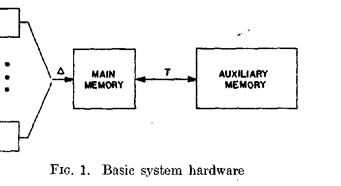
这里有两个值得关注的时间参数。第一个称为"存储访问时间"（memory reference time），它是在处理器发起对存储中各项的访问的两个时刻之间测得的；它由如下延迟构成：存储周期时间、指令执行时间、由其他处理器试图同时访问同一存储模块而产生的"干扰"，以及可能还包括在各程序之间切换处理器所花的时间。我们把平均存储访问时间记为 $\delta$。第二个时间参数称为"传送时间"（transport time），即完成一次在两个存储层次之间搬运信息的交易所需的时间；它由如下延迟构成：在队列中等待、等待所请求的信息传送完成，以及可能还包括等待旋转式或可移动设备就位（"等待时间"，latency time）。我们把平均传送时间记为 $T$。由于主存通常是电子访问的，而辅存是机械访问的，$\delta$ 典型地为 1 微秒，而 $T$ 典型地至少为 10 毫秒。因此，速度比（$T/\delta$）达到 $10^4$ 量级甚至更高并不罕见。
主存可视为一个"位置"（locations）的线性数组，每个位置充当某个信息项的存放地点。每个位置由一个唯一的"存储地址"（memory address）标识。若存储器含有 $m$ 个位置，则地址为整数 $0, 1, \ldots, m-1$。若 $a$ 是一个地址，则存放在位置 $a$ 中的项称为"a 的内容"，记为 $c(a)$。在程序控制下，处理器产生一个对存储位置的"引用"序列，每次引用由一个地址以及一条"取"（fetch）或"存"（store）到指定位置的命令组成。
虚拟存储器的定义（Definition of Virtual Memory）
如前所述，虚拟存储器可用来给程序员一种错觉，使他觉得存储器比实际大得多。要做到这一点，必须允许程序员使用一组不同于存储器所提供的地址，并提供一种机制，把程序产生的地址转换为正确的存储位置地址。程序员使用的地址称为"名字"（name）或"虚拟地址"（virtual address），这类名字的集合称为地址空间或名字空间（name space）。存储器使用的地址称为"位置"（location）或"存储地址"（memory address），这类位置的集合称为存储空间。为便于后续引用，我们用 $N = \{0, 1, \ldots, n-1\}$ 表示地址空间，用 $M = \{0, 1, \ldots, m-1\}$ 表示存储空间，并且除非另有说明，我们假定 $n > m$。
由于地址空间被视为一组潜在可用的信息项名字，因此并不要求每个虚拟地址都"表示"或"包含"任何信息。
虚拟地址与存储位置之间不存在先验对应关系，所付出的代价是寻址机制的复杂性增加。我们必须纳入一种在执行期间把名字与位置关联起来的方法。为此，我们对每一时刻定义一个函数 $f: N \to M \cup \{\phi\}$，使得
$$ f(a) = \begin{cases} a' & \text{若项 } a \text{ 位于 } M \text{ 中的位置 } a' \\ \phi & \text{若项 } a \text{ 在 } M \text{ 中缺失} \end{cases} $$
这个函数 $f$ 称为地址映射（address map）或地址转换函数（address-translation function）。
出于前面给出的理由，令 $n$ 远大于 $m$ 对我们是有利的，但这并非必要。即使 $n \le m$，虚拟存储也能帮助解决重定位问题 [D11]，即在存储器中四处搬运信息的问题。
图 2 给出了一个映射 $f$ 的例子：对于 $N$ 中的 $a$ 和 $M$ 中的 $a'$，一条连线 $(a, a')$ 表示项 $a$ 存放在位置 $a'$，而没有连线则表示项 $a$ 不在 $M$ 中。图 3 展示了一种实现 $f$ 的硬件设备如何被插在处理器与存储器之间，以自动处理映射。注意，由于映射 $f$ 的缘故，程序员可能获得一种错觉：在 $N$ 中连续的项被连续地存放在 $M$ 中，尽管这些项实际上可能以任意顺序存放。地址映射的这种性质称为"人工连续性"（artificial contiguity）[R3]。
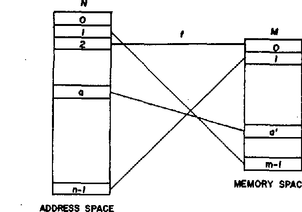
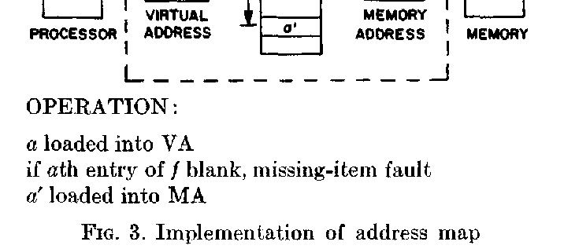
当映射设备收到名字 $a$ 时，若项 $a$ 在 $M$ 中，它将产生 $a' = f(a)$；否则产生一个"缺项失效"（missing-item fault）。该失效会中断程序的处理，直到缺失的项能够从辅存取得并放到 $M$ 中的某个位置 $a'$（这需要一个传送时间）；随后地址映射 $f$ 被重新定义为 $f(a) = a'$，该引用得以完成。如果 $M$ 已满，则必须移出某个项为新进入的项腾出空间，具体移出哪个项由置换规则（replacement rule）决定（若项 $b$ 进入，置换规则选择移出项 $a$，其中 $a' = f(a)$，则地址映射被重新定义使 $f(b)$ 变为 $a'$，而 $f(a)$ 变为 $\phi$）。与置换规则（决定移出哪些项）相对照的是调入规则（fetch rule，决定何时装入一个项）和放置规则（placement rule，决定把一个项放在哪里）。如果在某个项发生失效之前不采取任何动作把它装入 $M$，则该调入规则称为按需规则（demand rule）；否则，如果在项被引用之前就采取动作装入它，则该调入规则称为非按需规则或预判规则（nondemand 或 anticipatory rule）。
下面简要考虑地址映射 $f$ 的实现。最易于设想的实现称为直接映射（direct mapping），它是一个含有 $n$ 个表项的表：当 $f(a) = a'$ 时，第 $a$ 个表项存放 $a'$，否则为空（即含有符号 $\phi$）。如果像通常情况那样 $n$ 远大于 $m$，则该表将含有大量（即 $n - m$ 个）空表项。表示 $f$ 的一种远为高效的方式，是创建一个只含已被映射地址的表：该表恰好包含那些满足 $f(a) = a'$ 的对 $(a, a')$，而不含任何形如 $(a, \phi)$ 的对，因而至多有 $m$ 个表项。这样的表使用起来更为复杂：当收到名字 $a$ 时，我们必须一直搜索，直到找到某个 $a'$ 使 $(a, a')$ 出现，或直到搜完整张表。硬件相联存储器（associative memory）通常被用来存储这些映射表，从而使搜索操作相当高效。（相联存储器，或称"按内容寻址"存储器 content-addressable memory，是一种存储设备，它在每个单元中存放形如 $(k, e)$ 的信息，其中 $k$ 是"键"（key），$e$ 是"表项"（entry）。访问时向它提供一个键 $k$；若某个单元含有 $(k, e)$，存储器便返回 $e$，否则发出"未找到"信号。由于对所有存储单元的搜索是同时进行的，因此访问很迅速。）
手动与自动内存管理（Manual Versus Automatic Memory Management）
引言中的讨论从定性视角回顾了自动存储分配的动机。在展开关于实现与调控虚拟存储器的方法的讨论之前，我们想从一个更定量的视角来阐明自动存储分配的动机。我们面前的问题是：自动存储分配与手动相比，表现如何？
尽管文献中包含大量关于自动存储管理下程序行为的实验信息 [B3, B9, C3, F2, F3, F4, K5, O2, S2]，但作者们得出的结论却相互矛盾。这些实验中有许多针对的问题是"在给定的自动存储分配策略下，程序表现如何？"，而不是我们当前的问题："自动存储分配与手动相比如何？"针对前一个问题的实验，与针对后一个问题的实验，性质显然不同。因此，试图从为前一个问题收集的数据推断后一个问题，必然导致相互矛盾的结论。以下讨论基于 Sayre 的一篇论文 [S2]，他总结并解释了 Brawn 与 Gustavson 的工作 [B9]，因为这些似乎是仅有的针对后一问题的已发表著作。
如果名字空间 $N$ 大于存储空间 $M$，就必须对 $N$ 进行"折叠"（fold），使折叠后的 $N$ 能"装进" $M$。令 $g(b, t)$ 表示地址映射 $f$ 的逆：
$$ g(b, t) = \begin{cases} a & \text{若在时刻 } t \text{ 有 } f(a) = b \\ \text{未定义} & \text{否则} \end{cases} $$
如果对某个 $b$ 和 $t_1 < t_2$ 有 $g(b, t_1) \ne g(b, t_2)$，则称地址空间 $N$ 被折叠了。也就是说，某个存储位置在程序的执行过程中被分配给了不止一个地址。在 $t_1$ 与 $t_2$ 之间，必定发出过一系列命令——移出（move out）与移入（move in）——正是它们导致 $g(b, t_1)$ 被 $g(b, t_2)$ 所取代。如果程序员预先规划了存储分配，并已在程序文本中需要的地方插入了移出与移入命令，则称名字空间 $N$ 是手动折叠的。如果移出与移入命令不在程序文本中，而是分别由虚拟存储器机制的置换规则与调入规则生成，则称名字空间是自动折叠的。注意，手动折叠的文本旨在装进某个特定的、大小为 $S_0$ 的存储空间，而自动折叠的文本可以装进任何非空的存储空间。
我们现在的问题是：自动折叠能否与手动折叠相竞争？可以合理认为，当主存与辅存之间的速度比 $T/\delta$ 较小时，自动折叠应当具有竞争力；但当 $T/\delta$ 很大（比如 $10^4$ 或更大）时，它还有竞争力吗？Sayre 给出了肯定的回答。
Sayre 告诉我们，Brawn 与 Gustavson 考虑了一批代表各种可能行为的程序，并在一个 $T/\delta$ 超过 $10^4$ 的存储系统中做了如下实验。对给定程序，令 $T_a(S_0)$ 表示当 $N$ 被自动折叠进大小为 $S_0$ 的内存、且采用按需调入规则和一种良好置换规则时的总运行时间（执行时间与传送时间之和）。令 $T_m(S_0)$ 表示当 $N$ 为大小为 $S_0$ 的内存手动折叠时的总运行时间。对所考虑的程序，
$$ 0.8 < T_a(S_0)/T_m(S_0) < 1.7, \qquad E[T_a(S_0)/T_m(S_0)] = 1.21 $$
其中 $E[\,]$ 表示期望值。换句话说，自动折叠（平均而言）的效率比手动折叠最多低 21%。
现在，令 $K_a(S_0)$ 表示程序在自动折叠条件下运行期间发出的传送次数，$K_m(S_0)$ 表示手动折叠条件下的传送次数。对所考虑的程序，
$$ 0.6 < K_a(S_0)/K_m(S_0) < 1.05, \qquad E[K_a(S_0)/K_m(S_0)] = 0.94 $$
因此，自动折叠器（即虚拟存储器）通常比手动折叠器（即程序员）产生的搬运次数更少。Atlas 的设计者对一类更受限的程序也观察到类似结果 [K3]。手动折叠的优点在于，与采用按需调入规则的虚拟存储器不同，处理可以与传送重叠进行。这提示我们：预判式（anticipatory）调入规则可能使比值 $T_a(S_0)/T_m(S_0)$ 始终小于 1 [P1]。
实验还表明，自动折叠器是稳健的（robust），即对于远低于预定 $S_0$ 的内存大小，它仍能给出良好性能。具体而言，在很宽的 $s$ 范围内（包括远小于 $S_0$ 的 $s$），$T_a(s)/T_m(S_0)$ 基本保持恒定。换句话说，一个给定的程序在自动折叠下与许多内存大小都兼容，而在手动折叠下只与一种兼容。
正如我们将在"程序行为与内存管理"一节中看到的，当程序表现出良好的局部性——即倾向于把引用集中在地址空间的小区域内——时，虚拟内存管理机制的效率最高。 我们将定义一个局部性的度量，即信息的工作集（working set of information），它是为保证程序高效运行而必须分配到存储位置上的最小虚拟地址集合。 Sayre 报告说，自动折叠下的运行时间 $T_a(S_0)$ 对程序员是否注意赋予程序以小工作集非常敏感，而关系 (i) 正是依赖于这一点已经做到。如果程序员不注意这一点，就可能出现非常大的 $T_a(S_0)/T_m(S_0)$。Sayre 报告说，生成良好的手动折叠文本的成本，似乎比生成具有良好局部性的非折叠文本的成本高出 25% 到 45%。因此，在虚拟存储器变得比手动折叠更低效之前，人们可以容忍自动折叠机制中多达 25% 的低效率。关系 (i) 表明通常情况确实如此。
因此，基于实验证据，我们可以得出结论：最好的自动折叠机制能与最好的手动折叠文本相抗衡（而且实际上可能胜过它们）。虚拟存储器由此在经验上得到了证明是合理的。
虚拟存储器的实现（Implementation of Virtual Memory）
在"虚拟存储器的定义"一节中所描述的地址映射 $f$ 的表格实现方式是不切实际的，因为它需要一个大小为 $m$ 的第二存储器来存放映射表。在接下来的几节中，我们将考察三种方法，它们能大幅减少必须存储的映射信息量。每种方法都把信息组织成若干块（blocks），块是地址空间中一组连续的地址。映射表中的表项现在指向块，而块的数量远少于地址空间中的单个地址。第一种方法——分段——把地址空间组织成任意大小的块（"段"）。第二种方法——分页——把存储空间（原文为 memory space）组织成固定大小的块（"页"）。第三种方法把分段与分页结合起来。
段和页都有名字，可用来在映射表中定位表项。段名通常（但不总是）由程序员指定，并由软件解释；页名通常由系统指定，并由硬件解释。分段与分页结合时，形成一种包含两个层次名字的寻址系统。除此之外，两种方案唯一本质的区别在于分页的块大小是固定的。
分段（Segmentation）
程序员通常需要两种能力：把他们的信息按内容相关或功能相关的方式组织成块，以及按名字引用这些块。现代计算机系统有四个目标，每一个都迫使系统向程序员提供处理其地址空间中命名块的手段：
- 程序模块化。每个程序模块构成一个命名块，它可以在任何时候被重新编译和修改。
- 可变的数据结构。某些数据结构（如栈）的大小在使用期间可能变化，因此可能需要把每个这样的结构分配到它自己的、大小可变的块中。
- 保护。程序模块必须受到保护，以免被未授权访问。
- 共享。程序员 A 可能希望借用程序员 B 的模块 S，即使 S 所占的地址是 A 已经保留作其他用途的。
这四个目标，连同机器独立性和表处理，并非虚拟存储器系统所特有。早在 50 年代末，人们就在物理存储中为之奋斗 [W5]。动态存储分配、链接与可重定位装入程序 [M3]、重定位与基址寄存器 [D11]，以及现在的虚拟存储器，都是这场奋斗取得胜利的结果。
分段式地址空间实现了这些目标。地址空间被视为若干命名段的集合，每段都是一个地址线性数组。在分段地址空间中，程序员通过一个二元地址 $(s, w)$ 引用一个信息项，其中 $s$ 是段名，$w$ 是段 $s$ 中的一个字名。（例如，地址 $(3, 5)$ 指的是第 3 段中的第 5 个字。）我们稍后讨论地址映射必须如何构造才能实现这一点。
通过把每个程序模块分配到它自己的段，一个模块的名字和内部地址不受其他模块变化的影响；于是前两个目标得以满足。通过为每个段关联某些访问权限（例如读、写或取指），可以实施保护。通过使同一个段在不同的地址空间中以不同的名字被知晓，第四个目标得以满足。
图 4 展示了实现分段的地址转换机制的要旨。存储器是位置的线性数组，每个段被整体装入存储器中一个连续的区域内。段 $s$ 起始的地址 $a$ 是它的基址（base address），而 $s$ 所占的位置数 $b$ 是它的界限（limit 或 bound）。段表中的每个表项称为一个描述符（descriptor）；若段 $s$ 在内存中，第 $s$ 个描述符就含有 $s$ 的基址—界限信息 $(a, b)$，否则为空。由名字空间地址 $(s, w)$ 形成位置地址 $a'$ 时所执行的步骤如图 4 所示。注意，如果 $s$ 不在内存中，就会发生缺段失效（missing-segment fault），中断程序执行直到 $s$ 被放入内存；如果 $w$ 落在 $s$ 允许的界限之外，就会发生溢出失效（overflow fault）。保护位（图 4 表项中的深色区域）可以与所试图进行的访问类型（即读、写或取指）进行核对，一旦检测到违规就产生保护失效。
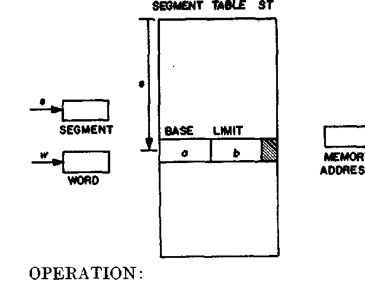
段表可以存放在主存中，而不必作为地址转换机制的一个组成部分。图 5 展示了当段表位于从位置 $A$ 开始的内存中时，映射机制的操作。段表本身也是一个段，称为描述符段（descriptor segment），而段表基址寄存器有时称为描述符基址寄存器。
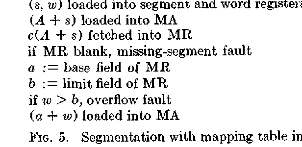
在这种情况下，程序产生的每次访问都将招致两次存储访问：一次访问段表，另一次访问被引用的段；于是分段会使程序运行速度减半，这是一个高昂的代价。对此问题的一个常见解决办法，是在地址转换硬件中纳入一个小容量高速相联存储器。每个相联寄存器含有一个表项 $(s, a, b)$，其中只保留最近使用过的这类表项。如果在要引用 $(s, w)$ 的时刻，相联存储器中含有 $(s, a, b)$，那么信息 $(a, b)$ 立即可用于生成位置地址 $a'$；否则就需要额外访问一次段表。已经发现，8 到 16 个相联寄存器就足以使程序以近乎全速运行 [S4]（确切数目当然取决于所考虑的机器）。
从历史上看，本节开头讨论的四个目标一直是由"文件系统"提供的，文件系统允许程序员操纵命名的"文件"，并控制把它们在主存与辅存之间移动的决策。原则上，在具有虚拟存储器的计算机中，程序员无需使用文件系统，因为辅存大概对他隐藏起来了，他所有的信息都可以永久地表示在他的地址空间中。在实践中，大多数当代"虚拟存储器系统"同时提供虚拟存储器和文件系统，以及运行在虚拟存储器之外的"文件处理原语"。在这些系统中，"段"就是已经从辅存移入地址空间的"文件"。Multics 是唯一有文档记载的例外 [B7]。
在最早关于分段的提案中（尽管未使用地址空间），Holt 的提案 [H2] 是其中之一。与图 4 非常相似的寻址方案最早在 Rice 大学计算机 [I1, I2] 和 Burroughs B5000 计算机 [B10, M1] 上实现。Dennis 对这一思想作了扩展、探讨了其含义，并有力地论证了其优势 [D10–D12]。Arden 等人 [A5] 以及 Daley 和 Dennis [D1] 给出了实现分段以及在执行期间把各段组合成程序的细节。Dennis 与 Van Horn [D13]、Johnston [J1] 以及 Wilkes [W4] 把分段放在多处理计算机系统各方面事务中的恰当位置来考察。Randell 与 Kuehner [R3] 把分段放在动态存储分配技术的大背景中考察，并给出了它在各种机器上实现的细节。
分页（Paging）
分页是另一种减少映射信息量、使虚拟存储器变得实用的方法。主存被组织成大小相等的位置块，称为页框（page frames），它们作为大小相匹配的虚拟地址块（称为页，pages）的驻留地点。页既是信息存储的单位，也是主存与辅存之间传送的单位。每个页框由它的框地址（frame address）标识，即该页框中第一个字的位置地址。
我们假设每页由地址空间中连续的 $z$ 个字组成，地址空间 $N$ 由 $n$ 个页 $\{0, 1, 2, \ldots, n-1\}$ 组成（即 $nz$ 个虚拟地址），存储空间 $M$ 由 $m$ 个页框 $\{0, z, 2z, \ldots, (m-1)z\}$ 组成（即 $mz$ 个位置）。一个虚拟地址 $a$ 等价于一个数对 $(p, w)$，其中 $p$ 是页号，$w$ 是页 $p$ 内的字编号，其关系为 $a = pz + w$，$0 \le w < z$，这里 $p = \lfloor a/z \rfloor$（$a/z$ 的整数部分），$w = R_z(a)$（$a$ 除以 $z$ 的余数）。在使用二进制运算的机器中，如果 $z$ 是 2 的幂，那么由 $a$ 生成 $(p, w)$ 的计算就非常简单 [A5, D11]。
图 6 展示了实现分页的地址转换机制的要旨。若页 $p$ 被装入页框 $p'$，则页表的第 $p$ 个表项含有框地址 $p'$，否则为空。由虚拟地址 $a$ 形成位置地址 $a'$ 所执行的步骤如图 6 所示。注意，如果 $p$ 不在内存中，就会发生缺页失效（missing-page fault），中断程序执行直到 $p$ 被放入内存的一个可用页框中。保护位（页表表项中的深色区域）可以与所试图进行的引用类型进行核对，一旦检测到违规就产生保护失效。
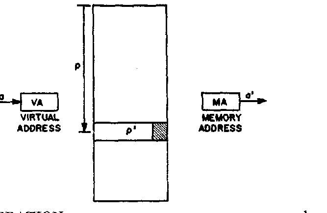
与分段的实现一样，页表也可以存放在内存中。地址转换机制的修改与图 5 大致相同，此处不再展示。如前所述，可以通过在地址转换机制中纳入一个相联存储器来保留最近使用过的页表表项，从而加快程序的运行。
分页最早用于 Atlas 计算机 [F3, K3]，目前几乎每个制造商至少在其一种产品中使用它 [R3]。与任何虚拟存储器系统一样，它把程序员与存储分配问题隔离开来，因而容易被误用；其性能总体上是令人鼓舞的 [A4, O2, P1, S2]，但偶尔也令人沮丧 [K6]。由于分页在文献中受到了大量关注，而其行为却往往不被广泛理解，我们将把本文后面大部分篇幅用于讨论它。
分段与分页（Segmentation and Paging）
由于分页本身并不改变地址空间的线性性质，它并不能实现促使分段产生的那些目标。由于分段本身要求在内存中找到各种大小的连续区域来存放各段，它并不能带来分页所提供的对主存的简单统一处理。要理解"对内存的统一处理"是什么意思，可以比较把一个新段装入内存与把一个新页装入内存的问题。装入一个段需要找到一块足够大的、未分配的区域来容纳这个新段，而装入一页只需要找到一个未分配的页框。后一个问题比前一个问题容易得多：每个未分配的页框大小都恰好合适，而并非每个未分配区域都足够大，即使若干个这样的区域之和可能完全够用。（寻找或创建未分配区域的问题将在后面考虑。）
可以把分段与分页结合到一种实现中，从而兼得两者之利。图 7 展示了这样一种寻址机制的要旨。每个段本身就是一个小的线性名字空间，可以由它自己的页表来描述。段表的第 $s$ 个表项含有一个数对 $(A, b)$，其中 $A$ 指明用哪个页表来描述段 $s$，$b$ 是段 $s$ 的界限。字地址 $w$ 像在分页中一样被转换为一个数对 $(p, w')$，然后用 $p$ 去索引页表 $A$，找到含有页 $p$ 的框地址 $p'$。如前所述，保护位可以包含在段表表项中。如前所述，段表和页表可以存放在内存中，寻址机制作相应修改。如前所述，可以用相联存储器来加速地址的形成；事实上，这里相联存储器是必不可少的，因为程序产生的每次存储引用地址都要招致两次查表，若没有相联存储器，程序只能以三分之一的速度运行。（如果处理器拥有足够丰富的寄存器—寄存器操作指令集，速度下降不会严重到三分之一。）
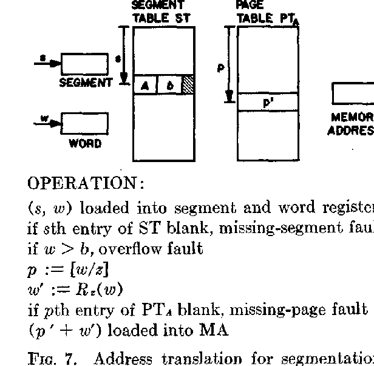
我们前面提到，分段与分页相结合有助于实现共享或借用程序的目标（见上面"分段"一节）。拥有段 $s$ 的程序员 X 可以允许程序员 Y 借用 $s$，而 Y 可以选择用另一个名字 $s'$ 来称呼 $s$。于是程序员 X 的段表在第 $s$ 个表项含有 $(A, b)$，而程序员 Y 的段表在第 $s'$ 个表项含有 $(A, b)$，其中 $A$ 指明一个（共享的）页表描述所讨论的这个段。实现的细节以及共享段的优点与困难的说明，在 [A5, B7] 中有充分描述。
大多数寻址机制使用单个寄存器来实现图 7 中分列显示的段寄存器和字寄存器。典型情况下，该寄存器最左边的 $q$ 位含有段名，最右边的 $r$ 位含有字名；因此最多可有 $2^q$ 个段，每段最多 $2^r$ 个字。在这些实现中，这 $r$ 个字位充当程序计数器（PC）。现在假设当程序计数器的内容为 $c(\mathrm{PC}) = 2^r - 1$ 时，程序试图递增程序计数器（即 $\mathrm{PC} := \mathrm{PC} + 1$）；结果将是 $c(\mathrm{PC}) = 0$，并从程序计数器最左边那一位产生一个进位。某些实现要求段的大小界限 $b$ 满足 $0 \le b < 2^r$，于是这个进位将触发一次溢出失效。另一些实现允许该进位传播到段名字段；因此若在段 $s$ 中 $c(\mathrm{PC}) = 2^r - 1$ 且执行了 $\mathrm{PC} := \mathrm{PC} + 1$ 操作，结果将是在段 $s + 1$ 中 $c(\mathrm{PC}) = 0$ [R3]。
存储利用率（Storage Utilization）
我们前面的讨论把注意力集中在实现分段、分页或两者结合的机制上。然而，一个虚拟存储器系统不仅仅是机制；它必然包含使用这些机制的策略。我们前面提到，策略分为三类：
- 置换策略（Replacement policies）。决定哪些信息要被移出内存；即创建未分配的内存区域。
- 调入策略（Fetch policies）。决定何时装入信息；即是按需还是提前装入。
- 放置策略（Placement policies）。决定信息要放在哪里；即选择某个未分配区域的一个子集。
置换策略和调入策略在分页与非分页系统中本质上使用相同的原理，在两种情况下难度也相同；因此我们把这些主题的讨论推迟到后面。在分页系统中放置 $k$ 个页的放置策略原则上非常简单：用置换策略腾出 $k$ 个页即可。然而，非分页系统的放置策略要复杂得多。为了探究其中的原因，我们考虑一个非常基础的模型，用来描述非分页存储系统的行为。
放置策略（Placement Policies）
我们假设一个线性的、含 $m$ 个字的内存被用来按"分段"一节的方式连续存放每个段。在某些时刻发生一些交易（transactions），改变内存的配置。一次交易要么是一个插入给定大小的新段的请求，要么是一个删除某个已存在段的请求。我们假定系统处于平衡态：即在很长一段时间内，每种大小的段的插入次数与删除次数相同。（就我们的目的而言，调入策略是插入请求的来源，置换策略是删除请求的来源。）经过很长时间后，内存将由一些段和穿插其间的空洞（未分配区域）组成；正如图 8 所示，内存呈现出"棋盘式"（checkerboarded）的外观。
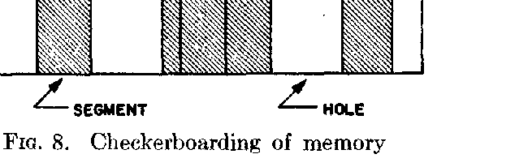
实现放置策略的放置算法使用两张表：列出所有空洞的"空洞表"（hole table），以及已经为寻址机制所用的"段表"（segment table）。对段 $s$ 的一次插入请求总会把一个表项 $s$ 加入段表，并可能增加、保持或减少空洞的数量，具体取决于 $s$ 被插入后是被两个空洞包围、被一个空洞和一个段包围、还是被两个段包围。最后一种情况概率极低可以忽略；第一种情况通常被排除，因为放置策略让插入从空洞的边界开始。对段 $s$ 的一次删除请求总会从段表中移除表项 $s$，并可能减少、保持或增加空洞的数量，具体取决于 $s$ 是被两个空洞、被一个空洞和一个段、还是被两个段包围。每次交易都必须相应地修改空洞表和段表。
现在我们来推导两个简单但重要的、关于具有上述性质的放置策略的关系式。第一个是"百分之五十规则"（fifty percent rule，Knuth [K4] 提出），它指出空洞的平均数量是段的平均数量的一半。另一个是"未用内存规则"（unused memory rule），它确立了放置一个段的难度与未用内存量之间的关系。
百分之五十规则 [K4]。假设上述存储系统处于平衡态，平均有 $n$ 个段和 $h$ 个空洞，且 $n$ 和 $h$ 都很大，则 $h$ 约等于 $n/2$。
为证明这一点，我们求出一个任意选取的段其右邻为空洞的概率 $p$（"右"按图 8 定义）。在段驻留于内存的整个生命周期中，施加于其紧邻右侧内存区域的交易中，一半是插入，一半是删除；因此 $p = \frac{1}{2}$。于是，以空洞为右邻的段的数量为 $np = n/2$，即空洞的数量约为 $n/2$。
未用内存规则。假设上述存储系统处于平衡态，令 $f$ 为空洞所占内存的比例。进一步假设平均段大小为 $S_0$，且平均空洞大小至少为 $kS_0$（$k > 0$）。则 $f \ge k/(k+2)$。
对一个含 $m$ 个字的内存证明此结果如下：由百分之五十规则，内存中有 $n/2$ 个空洞；由于每段平均占据大小为 $S_0$ 的空间，空洞占据的空间量为 $m - nS_0$，于是每个空洞的平均空间（空洞大小）为 $x = (m - nS_0)/h = 2(m - nS_0)/n$。但我们假设 $x \ge kS_0$，这意味着 $(n/m)S_0 \le 2/(k+2)$。于是
$$ f = (m - nS_0)/m = 1 - (n/m)S_0 \ge 1 - 2/(k+2) = k/(k+2). $$
换句话说，如果我们希望通过维持大空洞来限制放置算法的开销，就必须准备好通过"浪费"比例为 $f$ 的内存来为这种限制"付账"。这并不像看起来那么严重，因为仿真实验 [K4] 表明空洞大小有很大的方差，常常可以使 $f$ 低至 10%（即 $k$ 约为 $\frac{1}{4}$）。即便如此，也不可能把 $f$ 降到零。
在具有上述性质的众多放置算法中，有两个特别值得关注。第一个之所以吸引人，是因为它最充分地利用了空洞；第二个之所以吸引人，是因为它实现简单。假设有 $h$ 个空洞，大小为 $x_1, x_2, \ldots, x_h$，并到达一个大小为 $s$ 的插入请求。
- 最佳适配（Best fit）。空洞表按大小递增顺序列出空洞（即 $x_1 \le x_2 \le \ldots \le x_h$）。找到使 $s \le x_i$ 的最小 $i$。
- 首次适配（First fit）。空洞表按起始地址递增顺序列出空洞。找到使 $s \le x_i$ 的最小 $i$。（经过很长时间后，小空洞会倾向于堆积在空洞表头部，从而增加搜索时间。为防止这一点，空洞表被实现为一个带"起始指针"的循环链表；每次搜索推进该指针，并从指定的空洞开始搜索。）
Knuth [K4] 报告了对这些及其他放置策略的详细仿真实验。他发现首次适配算法是一大类算法（包括最佳适配）中最高效的。他还发现，内存大小必须至少是平均段大小的十倍才能高效运行。Collins [C6] 也报告了类似的结论。
Knuth 还报告了另一种算法，他发现它略优于首次适配，但由于它不属于上述放置策略的范畴，因此不遵循百分之五十规则和未用内存规则。这个策略称为"伙伴系统"（buddy system）。其动态性质尚未被完全推导出来 [K4]。
- 伙伴系统。假设请求大小为 $s = 2^i$（对某个 $i \le k$）。该策略维护 $k$ 个空洞链表，每种大小的空洞一个：$2^1, 2^2, \ldots, 2^k$。一个空洞可以通过对半拆分从 $(i+1)$ 链表中移出，从而产生一对大小为 $2^i$ 的"伙伴"（buddies），把它们放入 $i$ 链表；反过来，一对伙伴可以从 $i$ 链表中移出、合并，把新空洞放入 $(i+1)$ 链表。为找到大小为 $2^i$ 的空洞，我们递归地应用这一过程：
procedure gethole(i)
begin
if i > k + 1 then report failure;
if i-list empty then
begin
hole := gethole(i + 1);
split hole into buddies;
place buddies in i-list;
end;
gethole := first hole in i-list;
end
溢出与紧凑（Overflow and Compaction）
未用内存规则告诉我们，在平衡态下，我们必须容忍显著的内存损失。用图 8 的话说，内存已经变得如此棋盘化，以至于存在许多小空洞，它们合起来代表了相当大的空间。事实上，当我们为大小为 $s$ 的请求扫描空洞大小 $x_1, x_2, \ldots, x_h$ 时，可能发现对所有 $1 \le i \le h$ 都有 $s > x_i$（即请求无法满足），即使 $s < \sum_{i=1}^{h} x_i$（即空洞中分布着足够的空间）。对此我们能做些什么？
通常提出的解决方案是"紧凑内存"（compacting memory），即四处移动各段，直到若干空洞合并成一个足够大、能容纳给定请求的单一空洞。Knuth [K4] 报告说，仿真实验表明，当首次适配算法开始遇到溢出时，内存无论如何已接近满；因此紧凑它至多只能带来边际收益。换句话说，良好的放置策略往往使紧凑策略变得没有必要。
关于内存紧凑的作用，可以采取一种略有不同观点。我们可以不使用复杂的空洞选择策略而完全不做紧凑，也可以使用复杂的紧凑策略而完全不做空洞选择。正如之前维护空洞表的开销限制了我们充分利用内存的能力一样，运行紧凑策略的开销也限制了我们充分利用内存的能力。为说明这一点，我们考虑图 9 所建议的紧凑方案。在某些时刻——"紧凑启动时刻"——计算机操作被暂停，所有段被一起移到内存的低端，在内存的高端形成一个大空洞。每个插入请求被放在空洞的低端，从而使边界右移；当边界到达内存高端时，发生下一次紧凑启动。
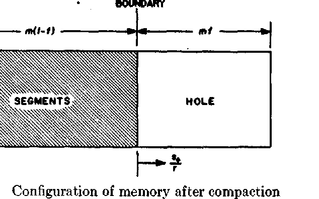
紧凑结果。假设上述存储系统处于平衡态，内存中比例 $f$ 未被使用；假设每个段在被删除前平均被引用 $r$ 次，且平均段大小为 $S_0$。则系统花费在紧凑上的时间比例 $F$ 满足
$$ F \approx \frac{1 - f}{1 - f + (f/2)(r/S_0)}. $$
为证明此结果，注意每个时间单位都会对内存中某个段发生一次引用，每 $r$ 次引用删除一个段。由于系统处于平衡态，每 $r$ 次引用必须插入一个新段；因此边界的移动速率为 $S_0/r$ 字每单位时间。系统的运行时间 $t_o$ 就是边界穿过空洞所需的时间，即 $t_o = fmr/S_0$。紧凑操作对要移动的 $(1-f)m$ 个字中的每一个都需要两次存储引用——一次取和一次存——加上开销，即紧凑时间 $t_c$ 至少为 $2(1-f)m$。花费在紧凑上的时间比例为 $F = 1 - t_o/(t_o + t_c)$，化简即得所给表达式。
图 10 给出了 $F$ 对 $f$ 的曲线，从中可以明显看出：如果要避免花费大量时间进行紧凑，就必须容忍显著的内存浪费。由于与搜索一个组织良好的空洞表相比，紧凑相对较慢，前者往往不如后者高效，因此紧凑并不常用。
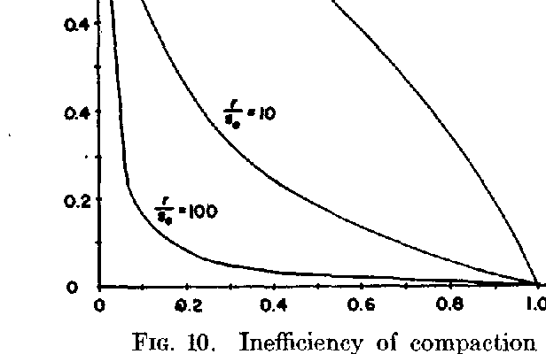
总之，非分页内存需要一种"投资"，即一定数量的未用内存和放置策略中的开销，才能高效运行。某些系统，特别是 Burroughs B5000 系列 [R3] 和某些 CDC 6600 安装 [B1]，选择了进行这种投资；但大多数系统选择使用分页内存，分页内存随时都可以被页完全利用。本节讨论的许多技术在通用性较差的应用中，特别是在表处理系统中，已经取得了巨大成功 [B5, C4, K4]。
碎片（Fragmentation）
我们在上一节的讨论揭示了一个在虚拟存储器系统中相当重要的问题：存储碎片（storage fragmentation），即无法把物理位置分配给含有信息的虚拟地址。
存储碎片有三大类型。第一种是外部碎片（external fragmentation）[R2]，它发生在非分页内存中，此时棋盘化如此严重，以至于每个空洞都小到无法使用。（更确切地说，对大小为 $s$ 的段，外部碎片以概率 $E(s)$ 发生，即 $s > \max\{x_i\}$ 的概率，其中 $\{x_i\}$ 是各空洞的大小。$E(s)$ 遵循图 11 所示的曲线。）第二种是内部碎片（internal fragmentation）[R2]，它产生在分页内存中，因为存储请求必须向上取整为整数个页，最后一页的最后一部分被浪费（图 12）。（更确切地说，若 $z$ 是页大小、$s$ 是段大小，则 $s$ 被分配到 $k$ 个页，满足 $(k-1)z < s < kz$；于是最后一页内有 $kz - s$ 个字被浪费。）第三种是表格碎片（table fragmentation），它在分页和非分页内存中都会发生，因为物理位置被映射表占用，从而无法分配给虚拟地址。
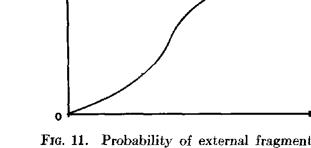
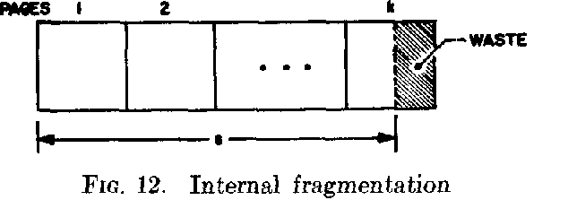
Randell [R2] 报告了仿真实验，表明碎片可能很严重，且内部碎片比外部碎片更麻烦。他的实验依赖三个假设：（1）每个段要么完全在内存中，要么完全不在内存中；（2）每个段从一个新页边界开始；（3）段一次插入或删除一个。许多系统违反了假设（1），因为一个段的最后一页缺失的概率非零。许多系统通过提供如下设施违反了假设（2）和（3）：允许把许多小段组合成地址空间中一个大的连续区域（例如用于虚拟存储器的"可重定位装入程序"，或独立于虚拟存储器的文件系统）。因此，在实践中碎片并不像可能达到的那样严重，但话又说回来，它也不能被忽视。
页大小（Page Size）
有两个因素主要影响页大小的选择：碎片，以及页传送操作的效率。
存在这样一个最优页大小：在此之下存储损失最小。随着页大小增加，段的最后一页内浪费的可能性增加。随着页大小减小，段的页表大小增加。在"过大"与"过小"这两个极端之间的某处，存在一个使内部碎片和表格碎片所损失的总空间最小的页大小。
最优页大小结果。令 $z$ 为页大小、$S_0$ 为平均段大小；设 $c_1$ 是因表格碎片损失一个存储字的代价，$c_2$ 是因内部碎片损失一个存储字的代价，并令 $c = c_1/c_2$。若 $z \ll S_0$，则最优页大小 $z_0$ 近似为 $(2cS_0)^{1/2}$。
为证明此结果，假设段大小 $s$ 是一个期望为 $E[s] = S_0$ 的随机变量。一个段预计占据约 $S_0/z$ 个页，每个页由一个页表字描述；因此该段的页表代价约为 $c_1 S_0 / z$。若 $z \ll S_0$，最后一页内的预期损失约为 $z/2$；因此该段的内部碎片代价约为 $c_2 z/2$。碎片的总预期代价为
$$ E[C]_z = (S_0/z)c_1 + (z/2)c_2. $$
令 $dE[C]_z/dz = 0$ 并解出 $z$，即得所给的 $z_0$ 表达式。
这些结果假定每个段都从页边界开始（如图 12 所示），且段及其页表都完全在内存中。许多虚拟存储计算机提供了这样的机制：把一组段连续地装入或重定位到地址空间中，此时内部碎片只发生在这组段中最后一个段的最后一页。如果这样一组中平均有 $k$ 个段，那么上述结果通过用 $kS_0$ 替换 $S_0$ 而修正，得 $z_0 = (2ckS_0)^{1/2}$。
这些结果绝非新颖。事实上，选择页大小以使碎片最小的问题，与在可变长缓冲区中选择块大小以使内部碎片和链接信息所损失的空间最小的问题完全相同。Wolman [W7] 对这个问题作过相当详细的研究；他给出了近似式 $z_0 \approx (2S_0)^{1/2}$ 精度的详细说明。$z_0$ 的一个典型值会是多少？关于段大小的可用数据 [B2] 表明，在大多数情况下 $S_0 \approx 1000$ 字；取此值并令 $c = 1$，我们得到 $z_0 \approx 45$ 字。考虑到通常使用 500–1000 字的页，这是相当令人惊讶的。
当我们考虑另一个因素——页传送操作的效率——时，我们发现了使用大页大小的动机。每次页传送操作需要一个传送时间 $T$ 才能完成（见上面"基本系统硬件"一节）。下面这些典型设备上的 $T$ 表达式是下界，因为在推导它们时，我们忽略了排队延迟以及花在名字转换和辅存控制上的处理器开销。
- 磁鼓（Drums）。要从磁鼓上取得一页，必须平均等待半个磁鼓转时间 $t_r$，直到所需页的第一个字旋转到位。若磁鼓圆周上有 $w$ 个字，则页传送时间 $t_t$ 为 $t_r z / w$。因此
$$ T = t_r/2 + t_t = t_r(1/2 + z/w). $$
典型地，$t_r = 16$ 毫秒，$w = 4000$ 字。
- 磁盘（移动臂）（Disks, moving arm）。一次磁盘访问与一次磁鼓访问类似，只是额外需要一个"寻道时间" $t_s$ 来把磁臂移到适当位置。因此
$$ T = t_s + t_r/2 + t_t = t_s + t_r(1/2 + z/w). $$
典型地，$t_s = 100$ 毫秒，$t_r = 30$ 毫秒，$w = 4000$ 字。
- 大容量存储器（Large capacity storage, LCS）。这只不过是一种低速磁芯存储器。若其周期为 $t_c$，则
$$ T = t_c = t_t z. $$
典型地，$t_c = 10$ 微秒。
- 扩展磁芯存储器（Extended core storage, ECS）。这是一种带有特殊传送设施的磁芯存储器；在初始"访问时间" $t_a$ 之后，它每个主存周期交付 $v$ 个字。因此
$$ T = t_a + t_t = t_a + (z/v)t_c. $$
典型地，$t_a = 3$ 微秒，$t_c = 1$ 微秒，$v = 10$ 字。
图 13 给出了这四个传送时间下界表达式对不同的 $z$ 值所作的曲线。注意在小页大小处有几个数量级的差异。图 14 给出了相应的效率上界 $e = t_t/T$ 对不同的 $z$ 值所作的曲线。从这些图中可以立即看出，移动臂磁盘根本不应使用，无论用于分页应用还是任何其他大流量辅存应用 [D3]。同样明显的是，磁鼓应谨慎使用 [C2, D3]；如果使用磁鼓，页大小至少应为 500 字。这就是为什么大多数分页系统使用磁鼓而非移动臂磁盘作为辅存，为什么这些系统中 500–1000 字的页大小很常见，以及为什么某些系统一直在试验 LCS [F1]、ECS [F5] 及其他 [L2] 辅存。
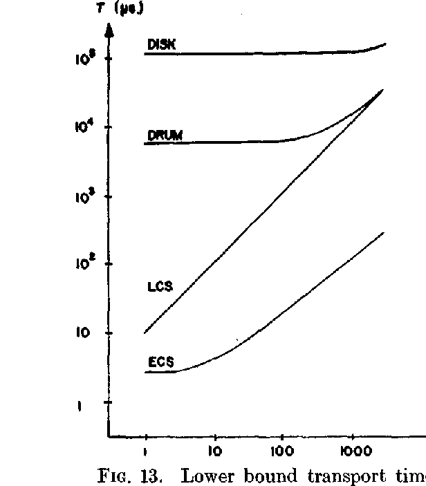
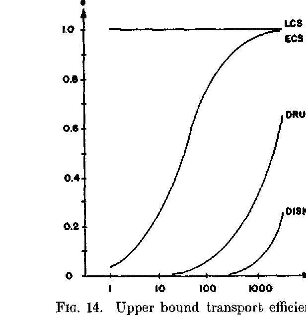
同样明显的是，在使存储利用率最大的页大小与使页传送效率最大的页大小之间，存在巨大的差异——约有两个数量级之差。不难看出，某些系统性能不佳 [K6] 至少部分归因于这一因素。
有时有人认为，抑制小页大小的另一个因素是为了容纳更多页而增加的硬件成本。然而，这种硬件成本是一次性的初始投资，而提高的存储利用率带来的是持续的长期回报，额外的硬件很可能是值得的。IBM 360/85 上的高速缓存（cache store）就是一个进行了这种投资且效果显然不错的系统的例子。
构建使页大小 $z_0$ 可行的系统的一种方法，是使用更快的设备（如 LCS 或 ECS）来处理进出主存的页流量。某些系统采用了这种方法 [F1, F5, L2]。
另一种方法——"分段分区"（partitioned segmentation）——由 Randell [R2] 提出。它在旋转辅存传送效率所需的大页大小与良好存储利用率所需的小页大小之间取得折中。我们描述 Randell 方案的一个小变体。存储系统使用两种页大小：主页（major page），其大小选择为使传送高效；以及副页（minor page），其大小选择为接近 $z_0$。假设主页大小为 $Z$，副页大小为 $z$，其中 $Z$ 是 $z$ 的倍数。大小为 $s$ 的段被分配一个由 $K$ 个主页组成的"头部"，使 $ZK < s < Z(K+1)$；以及一个由 $k$ 个副页组成的"尾部"，使 $zk < s - ZK < z(k+1)$，且 $K + k \ge 1$。于是内部碎片只发生在最后一个副页内。实现分段分区的地址转换机制如图 15 所示。该方案的一个主要缺点是，要有效运作，各段必须足够大，使其主要由主页构成。而可用数据 [B2] 表明情况未必如此。
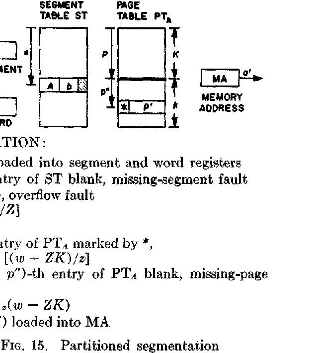
压缩因子（Compression Factor）
在任何一次给定的运行中，程序代码的某些部分将永远不会被引用，因为条件转移指令的结果不利。换句话说，一个含 $n$ 个字的程序，在某次运行中，只有 $n' < n$ 个字有机会被引用，而 $n' - n$ 个地址从未被引用。这些 $n' - n$ 个未被引用的字称为冗余的（superfluous）[K5]。由于把冗余字装入主存而造成的存储损失，在使用小页大小的分页内存中不太严重，因为页小时，未被引用的代码块倾向于孤立在它们自己的页上，而这些页永远无需被装入内存。Belady 的仿真 [B3] 和 O'Neill 的数据 [O2] 证实了这一点。被孤立在自身页上的冗余字越多，程序所需的空间就越少，它就越"可压缩"。
对于页大小 $z$ 和程序的某次给定运行，定义压缩因子 $c(z)$ 为被引用页数与总页数之比。$c(z) = x$ 意味着程序至少有比例 $1-x$ 的字是冗余的，或者反过来说，$x$ 是程序在某次运行中需要内存空间的最大相对量。注意 $c(n) = 1$ 且 $c(1) = n'/n$。根据 Belady [B3] 和 O'Neill [O2] 提供的数据，压缩因子近似为
$$ c(z) = a + b\log_2 z, \quad 2^5 \le z \le 2^n, $$
其中 $a \approx 0$，$b > 0$。数据提示了 $c(z)$ 的如下性质：
- 页大小减半往往使压缩因子降低 10% 到 15%；因此 $0.10 \le b \le 0.15$ [B3]。
- 对小 $z$（$1 \le z < 2^5$），表达式 $a + b\log_2 z$ 是 $c(z)$ 的一个下界，特别地 $c(1) = n'/n \ge a$。外推数据表明 $a$ 在 $0.1 \le a < 0.4$ 范围内是典型的。
- 对页大小 $z \ge 2^9$，$c(z) > 0.8$ 看来是典型的。
这些结果意义重大。它们揭示了一个经常被忽视的虚拟存储器的潜在优点：小页大小允许大量压缩而不损失效率。小页大小将带来存储利用率的显著提高，这种提高是在使碎片最小所获得的好处之外的。非分页存储系统（或采用大页大小的分页系统）无法享有这一好处。
分页存储器与非分页存储器的比较（Comparison of Paged and Nonpaged Memories）
如上所述，虚拟存储器的各种实现分为两类：分页的与非分页的。我们已经讨论了与每一类相关的大量事实。表 I 总结了这些事实并对两种方法作了比较。
根据表 I，分页在除易受内部碎片影响之外的所有方面都优于非分页；而内部碎片可以通过适当选择页大小来控制。表中没有列出分页存储器在某一方面的特点，而这一点使其实现比非分页存储器更优雅、更"干净"：即对内存的"统一"处理。分页把主存简单地看作一个由匿名存储块组成的池，而分段则把它看作由各种大小的段和空洞拼缀而成的一块补丁。辅存也是如此。因此，（定长的）页传送比（变长的）段传送管理起来简单得多。传送变长段的困难，还会因必须留意特定的段长以免越界覆盖缓冲区而增加的开销而加剧。因此，几乎所有虚拟存储器都采用某种形式的分页，也就不足为奇了。
表 I. 分页存储器与非分页存储器的比较
| 因素 | 分页 | 非分页 |
|---|---|---|
| 分段的名字空间 | 可行 | 可行 |
| 每次程序引用的存储访问次数： | ||
| 1. 采用分页 | 2 | — |
| 2. 采用分段 | — | 2 |
| 3. 两者都用 | 3 | — |
| 4. 采用相联存储器映射 | 1 | 1 |
| 置换策略 | 必需 | 必需 |
| 调入策略 | 通常按需 | 通常按需 |
| 放置策略 | 必需，但简单 | 必需，但复杂 |
| 内存紧凑 | 不需要 | 可选；价值有限 |
| 外部碎片 | 无 | 有；通过放置策略及至少为平均段大小十倍的内存来控制 |
| 内部碎片 | 有，但可通过适当选择页大小来控制 | 无 |
| 表格碎片 | 有 | 有 |
| 压缩因子 | 小页大小下可远小于 1 | 通常为 1 |
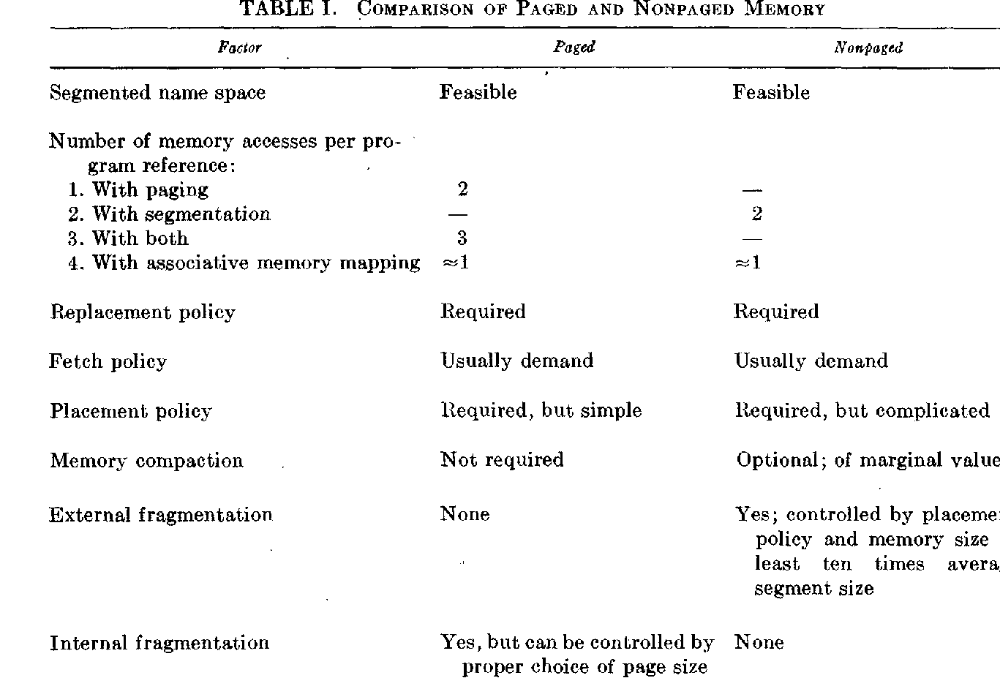 |
请求分页（Demand Paging）
由于分页如此常用，且在文献中被如此频繁地讨论，我们余下的讨论都围绕这一主题展开。请求分页（demand paging）作为最简单的形式，是使用最广泛的。请求分页曾——不公平地——遭受广泛传播的批评 [F2, F4, K6, R3]，这些批评出现在任何人有足够的经验来正确评价它之前。
为了避免维持大量使用不足的资源，分时系统和多道程序设计系统试图通过共享资源来提高资源的负载因子。为此，时间被划分为互不相交的区间，每个程序在某些区间内被分配资源，而在其他区间内则不分配。（这有时称为资源多路复用。）这些区间要么由处理在运行态与输入—输出等待态之间的交替自然地界定，要么由时间片和抢占人为地界定。后一种方法主要用于分时系统，在那里必须满足响应时间的时限要求。本节通篇我们把注意力限制在这种情况下。
在其被分配的时间片开始时，程序的工作信息必须被装入主存。较老的分时系统采用交换（swapping）来做到这一点，即它们在每个时间片开始前把一个程序的工作信息作为一个连续单元传送进内存，并在每个时间片结束后传送出内存。请求分页系统则在程序的时间片开始之前，只把一页（含有下一条要执行的指令的那一页）传送进内存，然后随着程序的请求"调入"（page in）额外的页；在时间片结束时，不会立即采取行动把程序的页从内存中移走，这留待置换策略去处理。
偶尔会听到这样的建议：如果在时间片开始（结束）时用交换来装入（卸出）程序的工作信息，而在时间片内使用请求分页，那么分页系统可以得到显著改善。我们将表明：在使用非移动式辅存或经特殊组织的磁鼓（分页鼓）的系统中，交换至多只有边际价值。然而，如果从分页鼓适当地加以管理，预调页（prepaging）可能有某种价值。
分页鼓（Paging Drum）
我们在上面"页大小"一节中指出，在所有旋转式或移动式辅存中，只有磁鼓（或类磁鼓存储 [A1]）可能适合处理进出主存的页流量。即便如此，也需要一种特定的磁鼓组织方式才能高效运行。分页鼓[A1, C2, D3, W1]由磁鼓存储器以及实现某种最优调度策略的硬件（或软件）组成。如图 16 所示，磁鼓表面被布置成若干等大的区域，每个区域能够存放一页；每个这样的"鼓页"由它的"扇区地址" $i$ 和"域地址" $j$ 标识。每个域配备一组读写头。如图 17 所示，调度器按照请求的是哪个扇区，把到达的请求分拣进 $s$ 个独立的"扇区队列"。在一个给定的扇区队列内，服务按到达顺序进行（即"先来先服务"）。一个旋转开关臂与磁鼓同步旋转，当扇区 $i$ 位于读写头之下时，它指向队列 $i$。假设一个对鼓页 $(i, j)$ 的读（写）请求位于扇区队列 $i$ 的队首。正当开关臂到达扇区队列 $i$ 时，域 $j$ 的读写头被设置为读（写）状态并连接到磁鼓通道。于是传送开始。
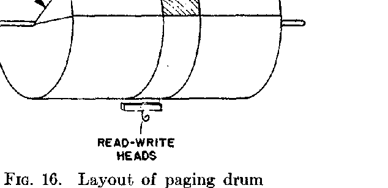
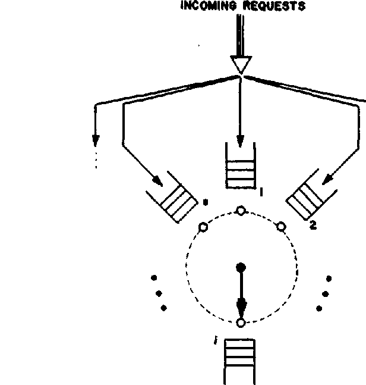
分页鼓有时也称为"开槽磁鼓"（slotted drums）或"最短访问时间优先"（shortest-access-time-first）磁鼓。某些制造商销售类似磁鼓的"分页磁盘"，即每条磁道有一个磁头的固定头磁盘。这些等价于分页鼓。
分页鼓与其历史上的前身——"先来先服务"（FCFS）磁鼓——形成对照，后者把所有到达的请求收集到一个单一的、按到达顺序排列的队列中。为比较两者，我们设想两个系统：系统 P 是分页鼓，系统 F 是 FCFS 磁鼓。在两个系统中，磁鼓转时间为 $t_r$，扇区数为 $s$。由于大多数磁鼓分配策略并不试图把给定程序的连续页放在连续的扇区上，我们可以假定每个请求随机选择一个扇区 [A1, C2, D3, W1]。"磁鼓负载" $L$ 是在磁鼓队列中等待的请求数。
磁鼓效率结果。令 $e_P(L)$ 表示当磁鼓负载固定为 $L$ 时系统 P 的期望效率，$e_F(L)$ 表示系统 F 的期望效率。则
$$ e_P(L) = \frac{L+1}{s+L+1}, \quad L \ge 1, $$ $$ e_F(L) = \frac{2}{s+2}. $$
考虑系统 P。$e_P(L)$ 的表达式是一个近似，推导如下。令 $t_0, t_1, \ldots, t_k, \ldots$ 为请求完成服务并离开磁鼓系统的时刻序列。（由于假定 $L$ 固定，在每个时刻 $t_k$ 都有一个新请求加入磁鼓系统。）于是 $x_k = t_k - t_{k-1}$ 表示第 $k$ 个请求的服务时间。由于所请求的扇区位置在统计上相互独立且 $L$ 固定，服务时间 $x$ 具有共同分布及期望 $E[x]$。现在，$E[x]$ 可写成 $E[x] = t + E[r]$，其中 $t = t_r/s$ 是传送时间，$E[r]$ 是期望旋转延迟。为近似 $E[r]$，我们想象一个周长为 $t_r$ 的圆，其周边随机分布着 $L+1$ 个点；其中一个点代表请求离开时磁鼓的位置，其余 $L$ 个点代表所请求扇区的位置。两个这样的点之间的期望距离为 $t_r/(L+1) = E[r]$。效率为 $e_P(L) = t/E[x] = t/(t + E[r])$，化简即得所给表达式。在系统 F 中，队列中的每个请求必须先完成服务，下一个才能开始，且每个请求随机选择其扇区。因此 $e_F(L)$ 与 $L$ 无关，事实上 $e_F(L) = e_F(0) = e_F(1) = 2/(s+2)$。
由此结果可得出若干事实。（1）对小页大小（大 $s$），效率 $e_P$ 总是很小。（2）对任何页大小，总存在使 $e_P$ 接近 1 的 $L$ 值。（3）$e_F$ 恒定不变，而 $e_P(L+1) > e_P(L)$；换句话说，分页鼓是"自调节的"，在更重的负载下变得更高。（4）对 $L > 1$ 且 $s \ge 1$，$e_P(L) > e_F(L)$。可以想见，分页鼓（系统 P）给出的传送时间比效率较低的 FCFS 磁鼓（系统 F）更短。
磁鼓传送时间结果。假设当磁鼓负载为 $L$ 时有一个页请求到达。每个系统延迟此请求的时间为
$$ T_P = t_r\left(\frac{L}{s} + \frac{s+2}{2s}\right), $$ $$ T_F = t_r\frac{(L+1)(s+2)}{2s}, \quad L \ge 0. $$
这个新到达的请求称为"标记"请求。在系统 P 中，标记请求进入一个期望长度为 $L' = L/s$ 的扇区队列。在完成服务之前，标记请求经历如下可加性延迟：$L/2$（磁鼓开始服务队列中第一个请求）；$L't_r$（磁鼓开始服务标记请求）；以及 $t_r/s$（它自身的传送）。于是 $T_P = t_r(L' + 1/2 + 1/s)$。在系统 F 中，标记请求加入那个前面有 $L$ 个请求的单一队列。现在队列中有 $L+1$ 个请求，每个需要时间 $t_r(1/2 + 1/s)$ 来完成。
由这两个结果可见，在正常磁鼓负载（$L > 0$）下，$e_P > e_F$ 且 $T_P < T_F$，最大差异出现在重负载时。基于这些原因，使用 FCFS 磁鼓的分页系统可能遭受严重的效率损失。
代价（Cost）
为了评估请求分页的"代价"，两个概念很有用：时空积（space-time product）和工作集（working set）。假设一个程序在时刻 $t$ 占用 $m(t)$ 个内存页；在区间 $(t_1, t_2)$ 上内存使用的时空积定义为
$$ C(t_1, t_2) = \int_{t_1}^{t_2} m(t)\,dt. $$
由于内存使用计费通常既基于使用的范围也基于使用的持续时间，$C(t_1, t_2)$ 与使用内存的实际金钱成本相关，因而常被称为"代价"。时空代价已成为确定内存分配策略有效性的重要辅助手段 [B5, B6, D5, D9, F1, L1, P1, R3]。一个程序在给定时刻的工作集，是其必须驻留在内存中以保证某种效率水平的最小页集合（更精确的定义稍后给出）[D4, D5]。
令 $C_d(A)$ 表示在来自辅存 $A$ 的请求分页下把一个工作集装入内存的时空代价，$C_s(A)$ 表示在来自辅存 $A$ 的交换下把一个工作集装入内存的代价。我们将确立四个论断：
- 在请求分页下，分页鼓的代价显著低于 FCFS 磁鼓（即 $C_d(F) - C_d(P)$ 很大）。
- 对于非移动式辅存（例如 $A$ 是 LCS 或 ECS），请求分页的代价绝不会高于交换（即 $C_d(A) \le C_s(A)$）。
- 与使用分页鼓的"纯"请求分页相比，交换与请求分页相结合的策略至多其价值令人怀疑。
- 除非能以很小的误差进行预测，否则即使是来自分页鼓的预调页也可能并无优势。
这些论断在下面各段中加以考虑。假设要装入一个大小为 $w$ 的工作集，一次传送操作需要处理器时间 $t_o$，磁鼓有转时间 $t_r$ 和 $s$ 个扇区。
代价 $C_d(A)$ 确定如下。假设 $w$ 页中的 $k-1$ 页已被装入，第 $k$ 页发生失效；我们必须再保留一页内存，并让程序停顿第 $k$ 个传送时间 $T_k$。由于页调用的顺序与它们在磁鼓上存放的顺序之间没有关联，对 $1 \le k \le w$ 有 $T_k = T$。于是
$$ C_d(A) = \sum_{k=1}^{w} kT_k = T\frac{w(w+1)}{2}. \tag{i} $$
现在若 $A$ 是分页鼓系统 P（见上面"分页鼓"一节），则 $T = t_o + T_P$。类似地，对 FCFS 磁鼓系统 F 有 $T = t_o + T_F$。应用上面"磁鼓传送时间结果"，对负载 $L$，
$$ C_d(F) - C_d(P) = \frac{w(w+1)}{2}\, t_r\frac{L}{2}. $$
只要 $L \ge 1$（通常情况），代价差就随工作集大小的平方增长。这确立了第一个论断。
代价 $C_s(A)$ 确定如下。我们保留 $w$ 页内存，然后在一个传送时间 $T'$ 内把整个工作集作为一个单元传送。于是
$$ C_s(A) = wT'. \tag{ii} $$
若 $A$ 是访问时间为 $t_a$ 的 ECS（见上面"页大小"一节）且页传送时间为 $t_t$，则
$$ T = t_o + t_a + t_t, \qquad T' = t_o + t_a + w t_t. $$
把这些值分别代入 (i) 和 (ii)，我们得到
$$ C_s(A) - C_d(A) = \frac{w(w-1)}{2}(t_t - t_o - t_a). $$
若 $t_t \ge t_o + t_a$，该表达式为正，而通常情况正是如此。若 $A$ 是 LCS，则 $t_a = 0$，同样结论成立。这确立了第二个论断。
"交换鼓"（swapping drum）是一个 FCFS 磁鼓 $F$，系统保证每个工作集的各页存放在连续的扇区上。假设一个对 $w$ 页工作集的请求到达时，磁鼓队列中还有 $L$ 个大小为 $v_1, \ldots, v_L$ 的其他请求；交换鼓的传送时间为
$$ T' = t_r\left(\frac{L}{2} + \frac{1}{2} + \sum_{i=1}^{L} v_i/s\right). $$
（推导 $T'$ 的论证类似于推导 $T_P$。）我们感兴趣的是比较
$$ C_d(P) = \frac{w(w+1)}{2}(t_o + T_P), \qquad C_s(F) = wT'. $$
我们将忽略 $t_o$，因为 $t_o \ll t_r$。考虑磁鼓负载 $v_1, \ldots, v_L$ 的两个极端。一端是：每个 $v_i$ 都是一个装入完整工作集的请求；取 $w$ 为平均工作集大小且每个 $v_i = w$，我们（经过一些代数运算）发现对所有 $w > 0$ 有 $C_s(F) > C_d(P)$。另一端是：每个 $v_i$ 都是对单页的请求；取每个 $v_i = 1$，我们发现（经过一些代数运算）
$$ w > w_0 = 1 + \frac{2Ls}{2L + s - 2} $$
是 $C_s(F) < C_d(P)$ 的必要条件。对于分页系统中通常较重的磁鼓负载（$L$ 很大），$w_0 \approx s/2 + 1$，略大于整整一圈磁鼓的容量。如果我们重复这一分析，把在时间片结束时再把 $w$ 页交换出去的代价也包括进来，我们发现 $w_0 \approx 2s$；对典型磁鼓，$2s$ 约为 8000 字，是一个相当大的工作集。总之：当磁鼓负载从前一个极端变化到后一个极端时，系统进入并退出对交换不利的状态；即便在有利状态下，也只有当被移动的工作集相当大时交换才更便宜。我们的分析没有考虑另外两个因素：寻找或维持一批可供工作集交换进去的连续扇区可能代价高昂；在同一个系统中同时实现交换策略和请求分页策略也可能代价高昂。因此，交换在请求分页系统中至多只有边际价值。这确立了第三个论断。
现在，令 $C_p(P)$ 表示从磁鼓系统 P 预调页的代价，并设 $\epsilon > 0$ 是一个被预调的页未被使用的概率。要从磁鼓 P 预调页，我们会把 $w$ 个页指定为一组并把它们加入磁鼓负载 $L$。忽略 $t_o$，其代价约为 $wT_P'$，其中 $T_P'$ 是在负载 $L+w$ 下求值的 $T_P$。在这 $w$ 个页中，有 $\epsilon w$ 个被错误地预装入，因此将会有 $\epsilon w$ 次额外的缺页；假设每次缺页都用一个正确的页替换一个错误的页，则每次的代价为 $wT_P$。于是
$$ C_p(P) = wT_P' + \epsilon w(wT_P). $$
经过一些代数运算，我们发现
$$ w \ge w_0 = \frac{2L + s + 2}{(1 - 2\epsilon)(2L + s + 2) - 4} $$
是 $C_p(P) < C_d(P)$ 成立的充分条件。这有两个后果。第一，若 $\epsilon$ 很小且 $L$ 很大，则 $w_0 \approx 1$，预调页几乎总是有利的。第二，为使 $w_0$ 表达式的分母为正，我们要求
$$ \epsilon < \tfrac{1}{2}\frac{2L + s - 2}{2L + s + 2}. $$
如果 $\epsilon$ 不小且 $L$ 很小，则 $w_0$ 会很大，预调页将无利可图。由于上述论证非常定性且基于平均值论证，我们必须注意不要过分看重所给的具体表达式。我们的意图是表明：预调页的优势可能对 $\epsilon$、$L$ 和 $s$ 之间的关系非常敏感，需要仔细分析才能评估其在特定系统中的价值。（见 [P1]。）这确立了第四个论断。
上述讨论还确立了一点：虚拟存储器的性能可能强烈依赖于把页流量运进运出主存的通道的容量。尽管我们没有研究它，读者应当意识到，在主存与辅存之间设置若干条并行通道（与上面假定的单一通道相对）将提供进一步的容量提升。
一般而言，通过内存的页流量与系统处理该流量的容量之比越小，虚拟存储器的性能就越好。为使这个比最小，我们必须：（1）选择一种内存管理策略，使给定程序负载产生缺页的速率最小；（2）修改程序结构，使给定程序产生新缺页的速率降低；（3）提供硬件支持，以提高系统处理页流量的容量。这三个方面将在下面几节中详细考察。
程序行为与内存管理（Program Behavior and Memory Management）
程序行为是计算机系统设计与分析中最不被理解的方面之一。然而，如果我们要为预测程序未来的内存需求奠定可靠基础，或者要理解资源分配策略距最优有多接近，我们就需要对程序行为建模。
置换算法（Replacement Algorithms）
从现在起，我们用 $N = \{1, 2, \ldots, n\}$ 表示某个程序的各页。程序的动态行为可以用一种与机器无关的术语——它的引用串（reference string）——来描述：
$$ \omega = r_1 r_2 \ldots r_k \ldots, \quad r_k \in N,\ k \ge 1, $$
它是程序所引用的（不必互不相同）来自 $N$ 的页的序列。假设这个程序已被分配一个大小为 $m$（$1 \le m < n$）的存储空间，并将在分页方式下在这个空间中运行。若 $t(r_k)$ 表示页 $r_k$ 被引用的时刻，则期望时间 $E[t(r_{k+1}) - t(r_k)]$ 在 $r_k$ 位于内存时为 $\delta$，否则为 $T$（见上面"基本系统硬件"一节）。因此时空代价的期望增量为
$$ C(t(r_k), t(r_{k+1})) = \begin{cases} m\delta & \text{若 } r_k \text{ 在内存中}, \\ m(\delta + T) & \text{否则}. \end{cases} $$
当页大小固定且 $T > \delta$（事实上通常 $T \gg \delta$）时，使程序在分页下运行的总代价最小，就要求使缺页数最小。要理解这意味着什么，我们需要一个置换算法的精确定义。
$N$ 的一个含有 $m$ 个或更少页（记作 $|S| \le m$）的子集 $S$ 是一个可能的内存状态，$\mathcal{M}_m$ 是所有这样的 $S$ 的集合。置换算法通常保存关于程序行为的记录；其记录的状态称为控制状态 $q$，$Q$ 是所有这样的 $q$ 的集合。一个置换算法配置是一个数对 $(S, q)$。若配置为 $(S, q)$ 且页 $i$ 被引用，则进入一个新配置 $(S', q')$。我们用分配映射（allocation mapping）描述这一行为：
$$ g: \mathcal{M}_m \times Q \times N \to \mathcal{M}_m \times Q, $$
其中
$$ g(S, q, i) = (S', q') $$
且 $i$ 在 $S'$ 中。从一个初始配置 $(S_0, q_0)$ 出发，置换算法通过生成一个配置序列来处理引用 $r_1 r_2 \ldots r_k$：
$$ (S_0, q_0), (S_1, q_1), \ldots, (S_k, q_k), $$
其中
$$ (S_k, q_k) = g(S_{k-1}, q_{k-1}, r_k), \quad k \ge 1. $$
于是置换算法 $A$ 可以通过指定三元组 $A = (Q, q_0, g)$ 来描述。
现在，若 $A$ 是一个请求分页置换算法，则每当 $(S', q') = g(S, q, i)$ 时，内存状态 $S'$ 必须满足以下性质：
- 若 $i \in S$，则 $S' = S$（无缺页）。
- 若 $i \notin S$ 且 $|S| < m$，则 $S' = S \cup \{i\}$（页 $i$ 被加入内存）。
- 若 $i \notin S$ 且 $|S| = m$，则 $A$ 选择某个 $j \in S$ 且 $S' = (S - \{j\}) \cup \{i\}$（页 $i$ 替换 $j$）。
可以证明，对任何非请求分页算法 $A$，都可以构造一个请求分页算法 $A'$，它在每个引用串上产生的缺页都不多于 $A$ [A2, M2]。因此，把注意力限制在请求分页算法上是合理的。从现在起，"算法"一词特指"请求分页置换算法"。
最优分页算法（Optimal Paging Algorithms）
假设 $r_1 \ldots r_k \ldots r_K$ 是某次程序运行所产生的引用串，而引用时刻 $t(r_k)$ 是一次缺页的时刻。如果算法 $A$ 在 $t(r_k)$ 作出置换决策时需要关于未来（$r_{k+1} \ldots r_K$）的精确知识，则 $A$ 是一个"不可实现的"（unrealizable）算法。否则，若 $A$ 在 $t(r_k)$ 仅基于对未来的假设（例如概率）作出决策，则 $A$ 是一个"可实现的"（realizable）算法。在大多数实际应用中，我们只能满足于可实现的算法；不可实现的算法将需要对程序进行"预处理"并记录其引用串。这种操作不仅代价高昂，而且由于条件转移的缘故，这样得到的记录很可能无效。
如上一节所述，我们以缺页数最小作为最优性准则。自最早的寻呼机时代以来，人们就推理说：要使缺页数最小，就必须使缺页之间的时间最大。因此，以下一直是公认的最优性原则（Principle of Optimality）：设 $S = \{1', 2', \ldots, m'\}$ 是时刻 $t$（一次缺页的时刻）的内存状态，令 $t(i') > t$ 为页 $i'$ 下一次被引用的最早时刻。定义 $\nu(i') = t(i') - t$。应替换使 $\nu(i')$ 最大的那个页 $i'$。如果未来并非精确已知，则应替换使期望时间 $E[\nu(i')]$ 最大的那个页 $i'$。
在最大化 $E[\nu(i')]$ 的情形——即可实现算法的情形——我们只是试图使缺页的期望数最小，而非缺页的实际数最小。因此，最优的不可实现算法将比最优的可实现算法产生更少的缺页。
最优性原则具有很强的直觉吸引力。Belady [B3] 用它发展出一种最优的不可实现算法。许多其他作者发展出各种最优的可实现算法，每一种都依赖于用来确定 $E[\nu(i')]$ 的特定假设；例如，Atlas 机器的算法假定大多数程序都是循环的，因而产生周期性的引用串 [K3]；若干系统使用了一种假定 $E[\nu(i')] = t - t'(i')$ 的算法，其中 $t'(i') < t$ 是 $i'$ 最近一次被引用的时刻（这条规则称为"最近最少使用"，least recently used）。我们不打算综述已经提出和研究过的大量分页算法，这些在文献中已有充分论述 [B3, B4, B6, C3, C8, D4, D5, D9, H1, K5, J2, K3, O2, S2, S3, S5]。
尽管最优性原则在直觉上简单，但已知它对关于引用串结构与统计的任意假设并不成立。即便它确实成立，其证明也很困难，目前只在简单情形下已知 [A2, M2]。
即使最优性原则实际上可能并不总是最优的，它仍是一个良好的启发式方法；经验和实验证据表明，基于这一原则的算法能给出接近最优的性能。图 18 所示的证据摘自 Belady [B3] 以及 Coffman 与 Varian [C3] 的工作。令 $F(A, m, \omega)$ 表示算法 $A$ 在大小为 $m$ 的初始为空的内存中、在请求分页下处理引用串 $\omega$ 所产生的缺页数，并定义缺页概率
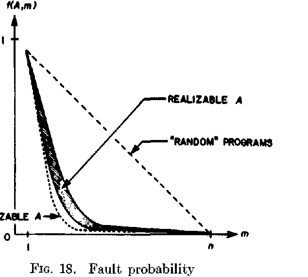
$$ f(A, m) = \sum_{\omega} \Pr[\omega]\, \frac{F(A, m, \omega)}{|\omega|}, $$
其中 $\Pr[\omega]$ 表示 $\omega$ 出现的概率，$|\omega|$ 表示 $\omega$ 的长度。对"合理的"算法 $A$，曲线 $f(A, m)$ 位于图 18 的阴影区域中（"合理"是指用来在最优性原则中确定 $E[\nu(i')]$ 的假设是合理的）。为作比较，我们给出了 Belady 最优不可实现算法 [B3] 的 $f(A, m)$ 的相对位置。要点是：对合理的 $A$，$f(A, m)$ 对 $m$ 远比对其对 $A$ 敏感。因此，尽管分页算法的选择很重要，内存大小的选择才是关键的。
图 18 还揭示了另一点。文献中偶尔会发现基于随机性假设（即给定程序的每一页在任何给定引用中被引用的可能性相同）的程序行为分析。这等价于在最优性原则中假定 $E[\nu(i')] = E[\nu(j')]$。若真如此，则每个可实现算法 $A$ 的缺页概率必为 $f(A, m) = (n - m)/n$。但事实并非如此。程序倾向于大量引用某些页、少量引用另一些页、而极少引用其余页。
与直觉相反，增大内存大小 $m$ 可能并不总能导致 $f(A, m)$ 相应减小；也就是说，$f(A, m)$ 作为 $m$ 的函数可能不是递减的，如图 18 所示。例如，已知 FIFO（先进先出）置换算法对某些引用串，其缺页概率曲线会出现递增区段 [B6]。Mattson 等人 [M2] 发现了一类非常有趣的置换算法，称为栈算法（stack algorithms），其 $f$ 曲线对 $m$ 总是递减的。这些算法定义如下。令 $\omega$ 为一个引用串，$S(A, m, \omega)$ 表示 $A$ 在大小为 $m$ 的初始为空的内存中、在请求分页下处理 $\omega$ 之后的内存状态。若对每个引用串 $\omega$ 都有
$$ S(A, m, \omega) \subseteq S(A, m+1, \omega), \quad 1 \le m < n, \tag{i} $$
则算法 $A$ 是一个栈算法。也就是说，$m$ 页内存的内容总是被包含在 $(m+1)$ 页内存中，从而各内存状态彼此"堆叠"起来。例如，LRU（最近最少使用）置换算法就是一个栈算法（要看出这一点，注意 $S(\mathrm{LRU}, m, \omega)$ 总是含有最近使用最多的 $m$ 个页）。考虑一个栈算法 $A$ 和一个引用串 $\omega$。若 $x$ 在 $S(A, m, \omega)$ 中——引用 $x$ 时没有缺页——则由 (i)，$x$ 也在 $S(A, m+1, \omega)$ 中；因此增大内存大小绝不会导致更多缺页，且对每个栈算法 $A$，$f(A, m)$ 必对 $m$ 递减。栈算法这一类包含了所有"合理的"算法，以及两个已知为最优的算法 [A2, M2]。它们特别易于分析 [M2]。
局部性原理与工作集模型（The Principle of Locality and the Working Set Model）
前面几节提到过一个重要的程序性质：局部性（locality）。非正式地讲，局部性是指：在任何一段执行区间内，程序偏好使用其页的一个子集，而这个被偏好页的集合的成员变化缓慢。局部性是一种实验观察到的现象，其表现部分在于对给定页的引用趋于聚集，部分在于图 18 中 $f(A, m)$ 曲线的形状 [B3, B4, D4, D5, D9]，还有部分在于程序在时间片开始时按需获取某些页的速度 [C3, F2]。局部性并不出人意料，这是由程序构造方式本身的性质决定的：
- 上下文（Context）。在任何给定时刻，程序都在其某个模块中运行，这导致引用集中在地址空间的某些"区域"或"局部性"上。例如，它的指令正从某个子程序的各页中取出，或它的数据正从某个特定数据段的内容中取出。
- 循环（Looping）。程序往往会在一小页集合内长时间循环。
为使局部性的表述更精确，我们引入页 $i$ 的"引用密度"（reference density）概念：
$$ \alpha_i(k) = \Pr[\text{引用 } r_k = i], \quad i \in N. $$
于是 $0 \le \alpha_i(k) \le 1$ 且 $\sum_i \alpha_i(k) = 1$。尽管程序的引用密度是未知的（也许是不可知的），但下面给出的"工作集"定义避免了对它们进行度量的需要。所谓程序各页的一个"排序"（ranking），是指一个排列 $R(k) = (1', 2', \ldots, n')$，使得 $\alpha_{1'}(k) \ge \cdots \ge \alpha_{n'}(k)$；若 $\alpha_{1'}(k) > \cdots > \alpha_{n'}(k)$，则排序 $R(k)$ 是"严格的"。若在引用 $k$ 处 $R(k-1) \ne R(k)$，则发生一次"排序改变"；"排序寿命"是两次排序改变之间的引用数。若 $\alpha_i(k)$ 是 $k$ 的缓变函数，则排序寿命往往很长。
局部性原理（Principle of Locality）。排序 $R(k)$ 是严格的，且期望排序寿命很长。
由局部性原理产生出"工作集"的概念。程序在第 $k$ 次引用的工作集定义为
$$ W(k, h) = \{ i \in N \mid \text{页 } i \text{ 出现在 } r_{k-h+1} \ldots r_k \text{ 之中} \}, \quad h \ge 1. $$
换句话说，$W(k, h)$ 是一个大小为 $h$ 的"窗口"从引用 $r_k$ 向后回看引用串所得到的"内容"。时刻 $t$ 的工作集为 $W(t, h) = W(k, h)$，其中 $t(r_k) \le t < t(r_{k+1})$。若页 $i$ 在该窗口内被引用，则预期它是工作集的成员，即
$$ \sum_{j=k-h+1}^{k} \alpha_i(j) \gtrsim 1. $$
（这个方程连同关于 $\alpha_i(k)$ 的假设，可用来确定 $h$ 的值。例如，若假设 $\alpha_i(k) = \alpha_i$，并规定对某个给定 $\alpha_0$、$\alpha_i < \alpha_0$ 的页不应被预期为工作集成员，则 $h = 1/\alpha_0$。）因此，工作集预期包含"最有用"的页；由局部性原理，其成员变化缓慢。
现在假设局部性成立且 $R(k) = (1', 2', \ldots, n')$。若 $i'$ 的排序高于 $j'$（即 $\alpha_{i'}(k) > \alpha_{j'}(k)$），则 $E[\nu(i')] < E[\nu(j')]$，且由于排序寿命很长，这一关系预期不会改变。由于 $i'$ 比 $j'$ 更可能属于 $W(k, h)$，于是有：
工作集原则（Working Set Principle）。假设内存管理按如下规则运作：一个程序当且仅当其工作集在内存中时才可以运行，且属于某个正在运行的程序的工作集的页不得被移出。那么，根据局部性原理，这一规则就是最优性原则的一种实现。
工作集原则不仅仅是一条内存管理策略，因为它蕴含了处理器分配与内存分配之间的强关联。它的实现并不依赖于对引用密度的度量。至少有一个计算机系统明确使用了这一原则，即 RCA Spectra 70/46 [D2, O3, W1]。
工作集表现出若干重要性质。令 $w(h)$ 表示期望工作集大小，即 $w(h) = E[\,|W(t, h)|\,]$。文献 [D5] 表明，对 $h \ge 1$：
- $1 \le w(h) \le \min\{n, h\}$；
- $w(h) \le w(h+1)$（非递减）；
- $w(h+1) + w(h-1) \le 2w(h)$（向下凹）。
这些性质赋予 $w(h)$ 如图 19 所示的一般形态。文献 [D5] 还表明如下结论。令 $g(h)$ 表示一页在被引用时不在 $W(t, h)$ 中的概率。假设 $h$ 增加 1，从而一个新的引用 $r_{t-h}$ 被纳入窗口；工作集大小的相应变化为：若 $r_{t-h}$ 不在 $W(t, h)$ 中，则 $\Delta W = 1$，否则为 0。于是 $E[\Delta W] = g(h)$，我们得到重要结果
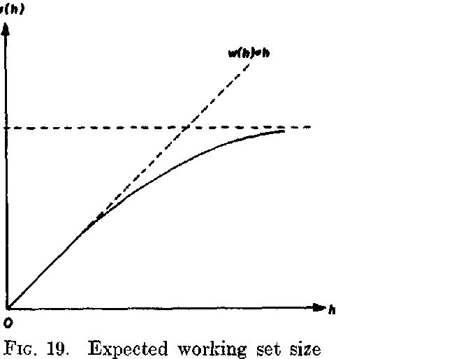
$$ g(h) = w(h+1) - w(h). $$
这提示我们：对一个程序的工作集大小函数的度量，可用来获得 $f(A, m)$ 的近似，其中 $m = w(h)$，$A$ 为工作集策略。有可能把 $w(h)$ 与引用串的某些性质联系起来 [D5]，并用 $w(h)$ 来确定在给定计算机系统中需要多少内存 [D7]。最后，令 $w(h, z)$ 表示页大小为 $z$ 时的期望工作集大小（以页计），并应用"压缩因子"一节的压缩结果：
$$ z_1 w(h, z_1) \le z_2 w(h, z_2) \quad \text{若 } z_1 < z_2. $$
也就是说，页越小，工作集所包含的字越少。
当然，上面给出的定义并不是工作集唯一可能的定义。按所指定的方式，度量工作集的方法是事后（after the fact）的，其可靠性依赖于关于引用密度缓变的假设。对于在窗口内未被引用、但即将出现在工作集中的页，这种方法将无法预测其迫近的出现。这个定义是为如下情形设计的：未来未知、局部性原理大部分时间成立、且对未来的"最大似然"估计已经足够。一个仍然开放的问题是：如何利用"上下文"和"循环"性质，连同关于程序结构的知识，在一页被引用之前预测它将很快成为工作集的成员。
多道程序设计与抖动（Multiprogramming and Thrashing）
用于多道程序存储器的分页算法通常处于两个极端之一或介于两者之间：
- 局部的（Locally）。内存被划分为若干"工作空间"（work spaces），每个程序一个。分页算法在每个工作空间内独立应用。特别地，某个程序中的一次缺页只能导致从其自身的工作空间中进行置换。工作空间的大小保持不变，直到系统允许改变。
- 全球的（Globally）。分页算法被应用于所有正在运行的程序的整个集合，仿佛这个集合是一个大程序，而不考虑哪些页属于哪些程序。特别地，某个程序中的一次缺页可能导致从内存中任何程序进行置换。因此一个程序的工作空间大小是随机变化的。
工作集原则按上述方式表述时，告诉我们多道程序设计下内存应如何管理，它是一种局部策略。事实上，全局策略一般是次优的，部分原因是没有办法确定内存何时"过度拥挤"，部分原因是即便内存并未"过度拥挤"，也没有办法保证一个程序的工作空间大到足以容纳其工作集。
全局策略下的多道程序设计容易发生抖动（thrashing），即当内存（或内存的一部分）被过度认购时可能发生的性能崩溃 [D6]。抖动是一种复杂现象。冒着过度简化的风险，我们推导一个估计它何时发生的条件。我们假设：（1）内存中第 $i$ 个程序在给定的全局策略下具有平均工作空间 $m_i$ 和缺页概率 $f_i(m_i)$，其中在所考虑的时间区间内 $f_i$ 是平稳的；（2）对每个 $i$，当 $m' \le m$ 时 $f_i(m') \ge f_i(m)$。
对一个占据平均大小为 $m$ 的工作空间的程序，可定义"占空因子"（duty factor）$d(m)$ 如下：若 $f(m)$ 是该程序的缺页概率，则两次缺页之间的期望引用数为 $1/f(m)$；若每次存储引用花费期望时间 $\delta$（见上面"基本系统硬件"一节），每次页传送花费期望时间 $T$，则该程序花费在执行上的期望时间比例为
$$ d(m) = \frac{\delta/f(m)}{\delta/f(m) + T} = \frac{1}{1 + \alpha f(m)}, \quad \alpha = T/\delta. $$
利用上面的条件（2），不难证明：若 $m' < m$，
$$ 0 \le d(m) - d(m') \le \alpha\big(f(m') - f(m)\big). \tag{i} $$
若 $d(m) - d(m')$ 接近其上界且 $\alpha$ 很大，则工作空间大小的相对较小变化将反映为 $d$ 的较大变化。这是引发抖动所必需的。
现在设想以下情形适用于一个使用全局策略的、含 $M$ 页的多道程序存储器。最初内存中有 $k-1$ 个程序，第 $i$ 个程序占据平均大小为 $m_i \ge 1$ 的工作空间，且 $m_1 + \cdots + m_{k-1} = M$。当引入第 $k$ 个程序时，它被授予 $m_k'$ 页，而全局策略把其余的 $m_i$ 改为 $m_i' < m_i$。令 $D_j$ 表示当内存中有 $j$ 个程序时的总期望处理效率，我们有
$$ D_{k-1} = \sum_{i=1}^{k-1} d_i(m_i), \qquad D_k = \sum_{i=1}^{k} d_i(m_i'). $$
若 $D_k \ll D_{k-1}$，即再增加一个程序触发了处理效率的崩溃，就发生抖动。利用 (i) 我们得到
$$ D_{k-1} - D_k \le \alpha \sum_{i=1}^{k-1}\big(f_i(m_i') - f_i(m_i)\big) - d_k(m_k') \approx \alpha F_0 - d_k(m_k'). \tag{ii} $$
现在若量 $D_{k-1} - D_k$ 接近其上界且 $\alpha F_0$ 不小，则有可能得到 $D_{k-1} \ll D_k$。在 RCA Spectra 70/46 计算机系统上的实验（其中 $\alpha > 10^4$，因为使用磁鼓辅存）表明，这种条件很容易被诱发 [D2]。相反，如果我们能保证 $\alpha F_0$ 很小，就能防止抖动，这可以通过使用更快的辅存，或通过让程序在 $F_0$ 很小的范围内变化空间分配来实现。
现在假设工作集策略生效。令随机变量 $w_i(h_i)$ 表示程序 $i$ 在窗口大小为 $h_i$ 时的工作集大小，令 $g_i(h_i)$ 表示一页不在工作集中的概率。由于引用密度最高的页最可能是工作集成员，$g_i$ 是递减的，即 $g_i(h_i) > g_i(h_i + 1)$。在工作集策略下程序 $i$ 的占空因子 $d_i(h_i)$ 满足
$$ d_i(h_i) \ge \frac{1}{1 + \alpha g_i(h_i)}, $$
其中不等式成立是因为一页不在工作集中时仍可能在内存中，因而 $g_i(h_i)$ 至少与缺页概率一样大。由于 $g_i$ 是递减的，我们总能选到足够大的 $h_i$，使对某个给定的 $g_0$（$0 < g_0 \le 1$）有 $g_i(h_i) \le g_0$；因此我们可以保证
$$ d_0 \approx \frac{1}{1 + \alpha g_0} \le d_i(h_i) \le 1. $$
换句话说，我们总能选到足够大的 $h_i$，使程序 $i$ 在至少为所期望的效率水平 $d_0$ 上运行。（通常我们会选择 $d_0$ 使关系 $d_0 \ll 1$ 不成立。）这意味着
$$ k d_0 < D_k \le k. \tag{iii} $$
如果我们考虑把第 $k$ 个程序加入内存，则当且仅当
$$ w_k(h_k) \le M - \sum_{i=1}^{k-1} w_i(h_i) $$
时才可以这么做，即内存中有空间容纳它的工作集。假设 $d_0 \ll 1$ 不成立，加入第 $k$ 个程序不会引起抖动。假设它确实引起了抖动，即 $D_k \ll D_{k-1}$；由 (iii) 我们有
$$ k d_0 < D_k \ll D_{k-1} < k, $$
这导致与 $d_0 \ll 1$ 矛盾。因此，工作集策略可用来防止抖动。RCA Spectra 70/46 计算机系统上的实验似乎证实了这一点 [D2]。
程序结构（Program Structure）
对算法组织和程序结构给予仔细关注，可以改善虚拟存储器系统的性能。有两种途径可以做到这一点：把程序代码恰当地分布到各页中，以及改进程序设计风格。
程序代码通常只是简单地按如下方式分配到各页：把头 $z$ 个字分给第 1 页，接下来的 $z$ 个字分给第 2 页，依此类推。有大量证据表明，这样做可能远非令人满意。Comeau [C7] 描述了一个实验：一个由许多子程序组成的程序，先按子程序名的字母顺序分页，再按子程序之间可能相互调用的关系分组分页；采用后一种方法时，缺页数显著减少。McKellar 与 Coffman [M4] 研究了矩阵元素应如何分配到各页，以及标准矩阵运算应如何组织才能在分页下获得更好性能；他们同样报告了在某些情况下相当可观的改善。
非正式地讲，代码分布问题是：如何利用编译器（或子程序链接器）把程序代码和数据分布到各页中，以改善局部性并获得小而稳定的工作集？形式上，代码分布问题可表述如下。把一个程序看作一个有向图 $G$，其节点表示指令或数据，其边表示可能的单步控制转移。与边 $(i, j)$ 相关联的是遍历该边的代价 $c_{ij} \ge 0$（例如 $c_{ij}$ 可以表示 $(i, j)$ 将被使用的概率）。给定页大小 $z \ge 1$，程序的一个分页方案（pagination）是把 $G$ 的节点划分成互不相交的集合 $X_1, \ldots, X_r$，使得每个 $X_k$ 至多含 $z$ 个节点（$1 \le k \le r$）。每个 $X_k$ 将被放在它自己的一页上。对给定的一对页 $(X, X')$，令
$$ v(X, X') = \sum_{i \in X}\sum_{j \in X'} c_{ij} $$
表示穿过 $X$ 与 $X'$ 之间的所有边的总代价。于是分页方案 $X_1, \ldots, X_r$ 的代价为
$$ C(X_1, \ldots, X_r) = \sum_{i=1}^{r}\sum_{j=1}^{r} v(X_i, X_j). $$
若一个分页方案达到最小代价，则它是最优的。对给定程序计算最优分页方案，一般是一项极其复杂的计算，只有在特殊情形下才知道相对简单的算法 [K2, R1]。即便如此，这种方案的潜在使用者仍将面临一个问题：判断他执行优化后代码的频率是否足够高，使长期节省能够抵消获取优化代码的高昂初始代价。
对这种方法必须谨慎。无论所涉及的数学多么有吸引力，除某些明显情形（如上述情形）外，结果可能并无特别用处。如果模块化编程使用日益增多的趋势继续下去，使用编译器来确定最优分页方案的价值就值得怀疑：（1）程序模块往往很小，且常常恰好能放进它们自己的页；（2）与"代码优化器必须知道整个程序的连通结构"这一假设相反，一个模块的编译器可能不知道任何其他模块的内部结构。（如果它知道，模块化编程的目的就落空了。）因此，优化过程无法在装入之前调用；而如果数据驱动的程序结构这一趋势继续下去，甚至装入程序能否进行有意义的优化都成问题。
通过改进程序设计风格来改善局部性，是一个几乎难以捉摸的目标，关于它我们知道的和能说的都很少 [K6]。少数实验表明，局部性（因而分页行为）强烈地取决于程序员的风格，并且仅凭对分页环境的少许了解，通过策略上相对较小的改动就可能显著改善许多程序 [B9, S2]。然而，尚不清楚程序员能否被恰当地教育并灌输以"正确"的经验法则，使他们习惯性地产生具有"良好"局部性的程序。如果要使任何这样的教育对广大程序员富有成效，就必须传授那些无需了解机器细节（页大小、内存大小等）即可应用的技术。高度结构化的程序设计语言——在其中，"上下文"（见"局部性原理与工作集模型"一节）可在机器层次上被轻易检测到——也许就是答案；换句话说，程序设计语言将"强迫"程序员采用"正确"的风格。ALGOL 语言在执行时大量使用栈，就是一个例子：工作集必定含有靠近栈顶的信息，因此很容易度量。人们已经构思出远为复杂的方法 [D14]。
硬件支持（Hardware Support）
我们已经看到，多道程序分页存储系统的三个主要潜在困难是：碎片、抖动，以及在请求分页下把工作集装入内存的高时空代价。这三个问题部分归因于主存与辅存之间很大的速度比 $T/\delta$；如果这个比值很大，它就会迫使采用大的页大小以使页传送操作高效，使处理效率对缺页概率的波动非常敏感，并使单次页传送操作的时空代价非常高。因此，改进虚拟存储器硬件的一个方面，就是降低这个比值。
文献报告了降低 $T/\delta$ 比值的两个方向，我们称之为从属存储器（slave memory，"cache" 高速缓存）[F5, L2, W3, W4] 和分布式存储器（distributive memory）[A3, D8, F1, L1, V1]。两种方法都采用一个由 $k$ 个"层次"组成的存储层次结构（图 20）：层次 $M_1, \ldots, M_{k-1}$ 是电子访问的（例如磁芯存储器、薄膜存储器或硅寄存器存储器），层次 $M_k$ 是机械访问的（例如磁鼓或磁盘）。电子层次可以在没有等待时间的情况下访问。一般地，层次编号越低，其速度越快、成本越高、容量越低。区别在于：从属存储器只允许从层次 $M_1$ 进行处理，而分布式存储器允许从任一电子层次 $M_1, \ldots, M_{k-1}$ 进行处理。
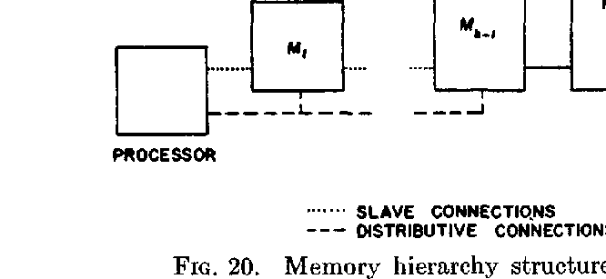
典型情况下，这些方法中电子层次的合计容量足以容纳所有活动程序的全部信息。因此，页在电子层次之间的传送时间很短，因为相邻层次之间的速度比可以做得较小。相应地，这种分层的存储组织结构能够达到使分页虚拟存储器良好运行所需的目标。
从属存储器方法 [W3] 最早实现为 IBM 360/85 上的"高速缓存"（cache store）[L2]。之所以这样命名，是因为各层次之间的信息传送完全由（"主"）层次 $M_1$ 中的活动控制。操作规则如下：
- 每当一页被存入 $M_i$ 时，在 $M_{i+1}, \ldots, M_{k-1}$ 的每一层中都有它的一个副本。每当 $M_1$ 中的一页被修改时，它在较低层次中的所有副本都必须同样被修改。
- 每当引用一个不在 $M_j$ 中的页时，向较低层次发出对它的请求；取回时间取决于到含有该页副本的"最近"层次的"距离"。
- 每当 $M_i$ 已满且从 $M_{i+1}$ 调入一个新页时，调用一种置换策略（通常最近最少使用）来选择一个要删除的页（由于较低层次中已有副本，无需把被替换的页移走）。
这种组织方式的主要优点是：程序的工作集会迅速积累在 $M_1$ 中并保留在那里；于是访问将以接近 $M_1$ 的速度完成。第二个优点是：由于传送时间很短，页可以很小，从而获得小页的所有优点。第三个优点是：该机制足够简单，几乎可以完全用硬件实现 [W3]。第四个优点是：在主层次中实现某些相联处理操作的可能性 [S6]。
许多现代处理器采用一种"指令栈"（instruction stack），即少量寄存器（通常不超过 32 个），用来存放程序最近引用过的指令。这个栈不仅允许"前瞻"（lookahead），而且充当一个小容量从属存储器，使包含在栈中的循环能以接近寄存器的速度进行 [W3]。按上述方式实现的从属存储器最著名的例子，是 IBM 360/85、IBM 360/195 和 CDC 7600 上的高速缓存 [L2]。这些系统使用 $k = 3$，$M_1$ 是周期约 0.1 微秒的硅寄存器存储器，$M_3$ 是周期约 1 微秒的磁芯存储器。层次 $M_1$ 容量约 32K 字节，已被发现足以积累除最大程序之外所有程序的工作集。即便工作集无法被容纳在 $M_1$ 中，性能也不会明显下降，因为 $M_1$ 与 $M_2$ 之间的速度比很小。
在分布式存储器方法中，处理器可以访问存放在任一电子层次中的信息。因此，一个给定程序的各页在被处理时可以分布在不同层次中。一般地，一页被引用得越频繁，它应存放在越高的层次中。这种系统最著名的例子在卡内基—梅隆大学 [F1, L1, V1]，它使用 $k = 3$；$M_1$ 是周期约 1 微秒的标准磁芯存储器，$M_3$ 是周期约 8 微秒的大容量存储器（LCS）。
分布式存储器系统存在一些从属存储器系统中没有的棘手实现问题。最严重的是需要一个策略来决定何时把一页移到更高（或更低）的层次。这些策略通常基于两种代价之间的权衡：不移动该页而以较慢速度运行的代价，与移动该页的代价；它们通常需要借助对每页引用密度的某种估计来作决策，这些估计通过预处理 [C1]、在前一个时间片中进行的度量 [F1] 或动态方式 [D8] 获得。使用动态度量技术的系统需要额外的机制来避免不稳定 [D8]。这两种方法——从属存储器与分布式存储器——哪种更优，尚是一个未决问题。分布式存储器的实现问题似乎更为严重，这使人怀疑：从属存储器方法也许是利用硬件的更好途径。
降低 $T/\delta$ 比值本身并不足以改善虚拟存储器系统的性能。改进这些系统硬件的第二个方面，涉及获取对内存分配有用的度量数据的机制。大多数系统实现的页表表项中含有以下一个或多个附加位：
- 修改位（Modified bit）。当且仅当该页自被放入内存后已被修改时置 1。若此位为 0，则可以删除该页而非置换它，前提是较低层次的内存中有其副本。
- 使用位（Use bit）。每当该页被引用时置 1，由使用情况计量例程置 0。该计量例程可通过读取这些位来编制关于页使用情况的统计。
- 未用位（Unused bit）。当一页被放入内存时置 1，在它第一次被引用时置 0。这一命中表示：该页尚未被请求它的程序引用，因此至少在那之前不应把它从内存中移走。
使用位可用来确定工作集或计算引用密度。计数器也可用于此目的 [D8]。如果寻址机制含有足够大的相联存储器，使其内容保持稳定，那么进入其中的各页可被视为程序的工作集；类似地，在从属存储器层次 $M_1$ 中积累的各页也可被视为程序的工作集。
改进虚拟存储器硬件的第三个方面涉及寻址机制的性质。当信息可能在不同地址空间之间共享时，虚拟存储器中曾出现困难 [B7, D13]。这里每个段可能有两个名字：一个"局部"名，用于在给定地址空间内标识它；一个"全局"名，用于在全系统范围内标识它。局部名由硬件按通常方式解释（见"虚拟存储器的实现"一节），全局名由软件解释（例如"文件目录"）。把全局名转换为局部名的机制相当复杂且耗时 [B7, D1]。解决办法似乎要求每个段拥有一个单一的、系统范围内有效的名字，这个名字可在内存的每个层次上由硬件解释 [D14]。
结论（Conclusions）
我们这篇关于虚拟存储器系统原理的综述，从追溯那些迫使动态存储分配产生的力量的历史与演变开始，即：对程序模块化、机器独立性、动态数据结构、消除手工覆盖、多道程序设计以及分时处理的追求。在动态存储分配问题最优雅的解决方案之中，就有虚拟存储器——它赋予程序员一种错觉，仿佛他的地址空间就是存储空间。实现从地址空间到存储空间的地址自动转换有两种基本途径：分段与分页。由于分段由程序员设想、分页由系统实现者设想，最好的实现是两者的结合。我们比较了"纯"分段与分页，发现分页存储系统通常更优越，但有三个潜在困难：（1）大页大小下存储利用率低的倾向；（2）多道程序设计下易发生抖动；（3）在时间片开始时请求分页下装入工作集的高代价。
所有地址空间远大于存储空间的虚拟存储器实现都有一个问题，即程序员可能过度坚持"空间与时间可以互换"的观念而误用之。然而，最后这句话必须谨慎解释。那些已被警告"时空取舍不成立"、并额外付出努力减少所用地址空间总量的程序员，常常反而增大了工作集。真正的目标，是拥有一个小的、稳定的、变化缓慢的工作集。如果做到了这一点，所用地址空间的量就无关紧要了。
这些问题是可以控制的，但需要超出当今许多系统所提供硬件的额外硬件支持。由于存储系统不仅仅是地址映射的实现，我们纳入了对最优置换策略原理的研究，发现工作集原则连同局部性原理，是最优性原则的一种实现。通过给出一种确定每个程序工作集的方法，这一原则意味着人们可以采取措施避免内存过度认购和抖动。
致谢（Acknowledgments）
我深深感谢 Jack B. Dennis（MIT）、Bernard A. Galler 与 Bruce W. Arden（均为密歇根大学），以及 David Sayre（IBM T. J. Watson 研究中心），他们深刻的评论对手稿的改进弥足珍贵。我还要感谢 John E. Pomeranz（芝加哥大学），他建议对"请求分页"一节作了一些改进。